면접관이 실제로 보는 다섯 가지
강사는 경력 초기에 시니어 자리 면접에서 여러 번 떨어졌다고 해요. 돌아보니 그 면접들엔 공통점이 하나 있었어요. 거의 늘 시스템 설계가 들어 있었다는 거예요. 지금은 미드 레벨 면접에서도 나와요. AI(Artificial Intelligence)가 구현 코드를 대신 쓰는 시대라, 회사는 지원자가 구성 요소들이 어떻게 맞물리는지, 처음부터 설계하고 트레이드오프를 따질 수 있는지 보고 싶어 하거든요.
슬라이드의 화살표 네 개가 시스템 설계가 면접에 나오는 방식이에요. 왼쪽 위의 '시스템 전체를 화이트보드에 그리기'가 가장 흔하고, 나머지는 회사 인프라의 병목 토론, 지난 프로젝트 설명, 개념을 깊이 묻는 질문이에요.
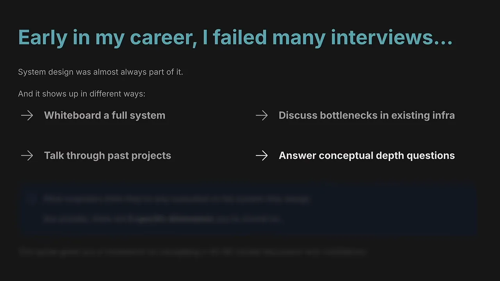
왜 코딩 면접보다 어렵게 느껴질까요
코딩 면접은 입력과 출력이 정해져 있어요. 함수가 어떤 인자를 받고 무엇을 돌려줘야 하는지 알고, 테스트 케이스로 맞는지 확인할 수 있어요. 시스템 설계는 정반대예요. 요구는 모호하고, 범위를 좁히는 것부터 지원자 몫이에요. 답도 하나가 아니에요. 그래서 이 면접은 무엇을 아는지보다 어떻게 생각하는지를 봐요.
채점 기준 다섯 가지
Spotify나 WhatsApp 아키텍처 몇 개를 외우는 건 다섯 가지 중 하나를 준비한 것에 불과해요. 슬라이드의 번호 다섯 개가 면접관이 실제로 점수를 매기는 축이에요. 각 줄 아래 작은 글씨가 그 기준에서 잘하는 모습이에요.
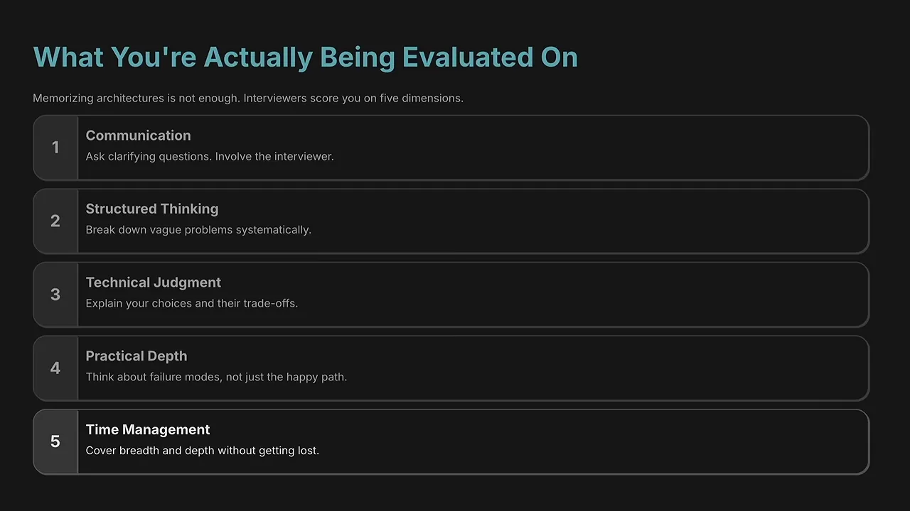
| 기준 | 면접관이 보는 것 | 실무에서는 |
|---|---|---|
| 소통과 협업 | 가정을 혼자 세우지 않고 질문으로 확인하는지 | 요구를 잘못 이해하고 만들었다가 다시 짜는 낭비를 막아요 |
| 구조적 사고 | 모호한 문제를 순서 있는 단계로 쪼개는지, 단계 사이를 오가지 않는지 | 지금 무엇을 하고 다음이 무엇인지 늘 분명해요 |
| 기술 판단 | SQL(Structured Query Language), 캐시, 메시지 큐를 고른 이유를 요구사항으로 설명하는지 | Kafka를 안다는 이유가 아니라 맞아서 골라요 |
| 실전 감각 | 장애, 규모, 잘못될 수 있는 일을 먼저 떠올리는지 | 실제로 운영해 본 사람과 이론만 아는 사람이 갈려요 |
| 시간 관리 | 한 영역에 매달리지 않고 45~60분 안에 넓이와 깊이를 모두 챙기는지 | 면접에서 시간을 못 지키면 일에서도 못 지킨다고 봐요 |
시간 관리를 위해 강사는 면접 초반에 어디에 집중하고 싶은지 면접관에게 묻거나, 직접 제안해서 합의해 두라고 권해요. 다음 섹션의 5단계가 그 시간 배분의 틀이에요.
60분을 나누는 5단계
어떤 화이트보드 설계 문제에도 같은 다섯 단계를 쓸 수 있어요. 목표는 정리된 상태를 유지하면서, 면접관에게 생각하는 과정을 보여 주는 거예요. 강사는 60분 면접이 45분보다 흔하다며 60분을 기준으로 설명해요.
슬라이드는 단계마다 걸리는 시간을 붙여 놨어요. 2단계 데이터·API가 약 20분으로 가장 길고, 마무리는 약 5분이에요. 말로는 2단계와 3단계를 각각 15~20분으로 잡고, 둘 중 어느 쪽을 먼저 해도 된다고 해요.
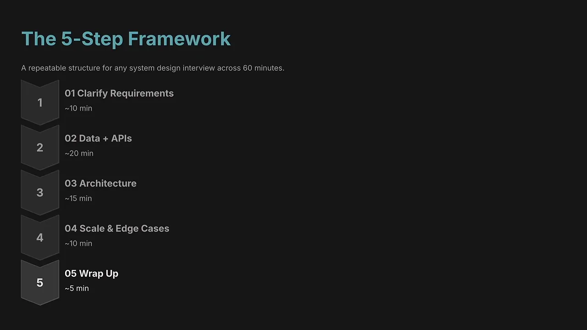
1단계: 요구사항 정리 (약 10분)
후보자가 가장 많이 하는 실수가 범위를 이해하기 전에 설계부터 시작하는 거예요. Spotify를 60분 안에 다 설계할 수는 없어요. 여러 팀이 몇 년 걸려 만든 시스템이거든요. 그래서 핵심 사용 사례와 범위 밖을 먼저 정해요.
왼쪽 열이 기능 요구사항, 오른쪽 열이 비기능 요구사항이에요. 아래 파란 띠에는 단계를 마칠 때 던질 확인 질문이 적혀 있어요.
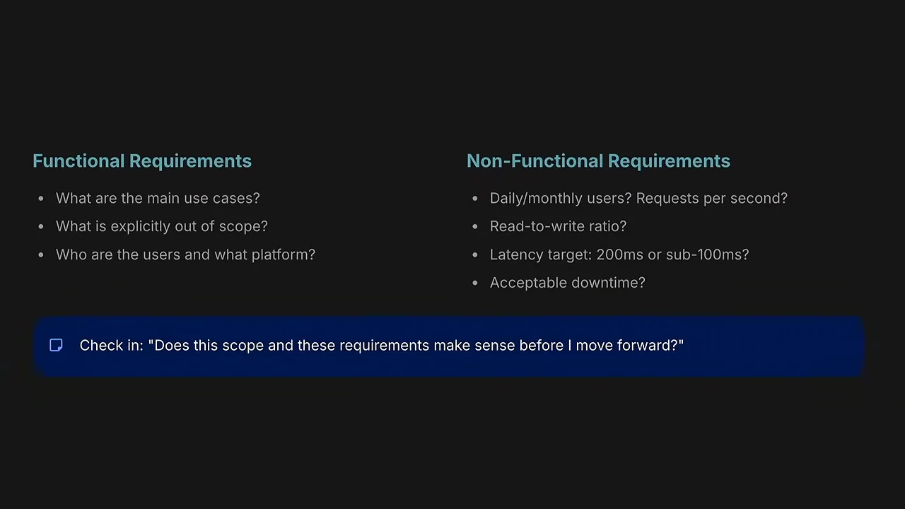
2단계: 데이터와 API (약 20분)
무엇을 저장하고 클라이언트가 어떻게 상호작용할지 모델링해요. YouTube라면 핵심 엔티티는 동영상과 사용자예요. 관계, 기본 키와 외래 키, 인덱스, 레코드 하나의 크기를 정하고, 어떤 데이터에 강한 일관성이 필요하고 어디서 최종 일관성으로 충분한지도 이때 정해요.
API는 주요 엔드포인트와 요청·응답 형식을 정하고, 페이지네이션, 에러 처리, 속도 제한, 버전 관리까지 말하면 좋아요. DB 선택도 여기서 해요. PostgreSQL이든 MongoDB든, 왜 그걸 골랐고 무엇을 고려했다가 버렸는지 함께 말해요.
3단계: 아키텍처 (약 15분)
아무것도 떠오르지 않을 때 시작점이 되는 네 가지가 있어요. 슬라이드 가운데 원을 둘러싼 네 상자예요.
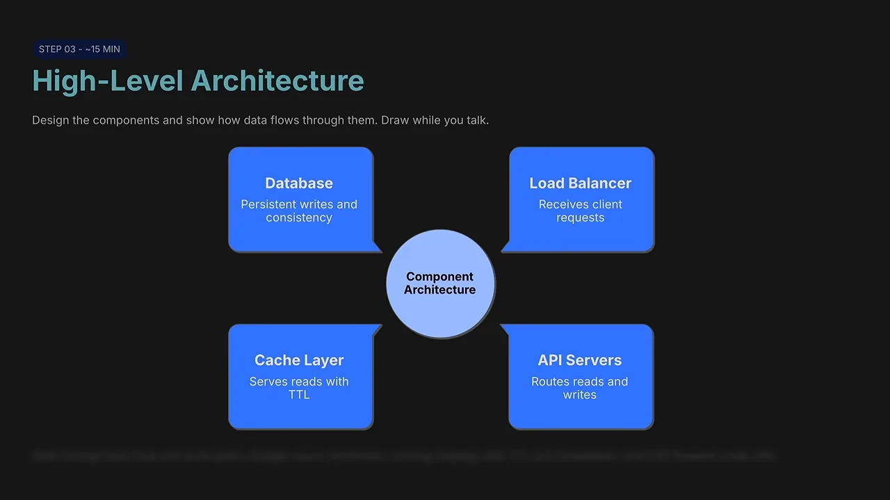
그다음 사용자 여정을 따라가요. 웹·모바일 앱에서 API 게이트웨이와 로드 밸런서, API 서버, 캐시, 필요하면 메시지 큐, 마지막으로 DB까지요. 읽기와 쓰기 흐름을 모두 짚어요. 캐시를 쓰면 TTL(Time To Live)과 무효화 방식을 꼭 말해요. 구성 요소마다 일관성과 가용성 중 무엇을 고르는지 CAP(Consistency, Availability, Partition tolerance) 정리로 설명하면 트레이드오프를 이해한다는 신호가 돼요.
4단계: 병목·확장·안정성 (약 10분)
정상 흐름이 아니라 부하가 몰릴 때 무엇이 깨지는지 보여 주는 단계예요. 강사는 미드 레벨과 시니어를 가르는 가장 분명한 신호라고 해요. 슬라이드의 네 항목이 다룰 거리예요.
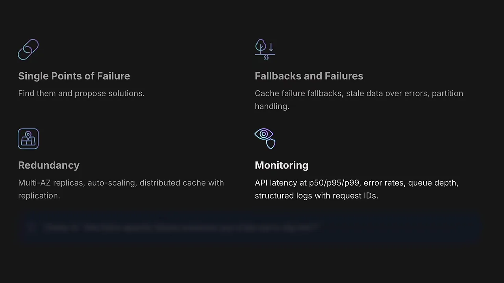
단일 장애 지점을 찾아 해결책을 내고, 무언가 고장 나면 느리지만 동작하는 경로로 넘어가는 폴백을 말해요. 다중 가용 영역 복제, 가용 영역을 넘나드는 자동 확장, 복제되는 분산 캐시 같은 이중화도 여기서 나와요.
5단계: 트레이드오프와 확장 (약 5분)
왼쪽 파란 카드는 지금까지의 결정을 요약하는 질문이고, 오른쪽은 "다음에 무엇을 만들겠냐"는 질문이에요. 노란 상자의 문구가 이 단계의 전제예요.
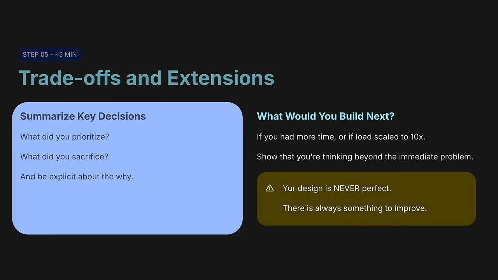
할 일과 하지 말 일
흰 글씨가 할 일, 그 아래 빨간 글씨가 피할 일이에요. 다섯 항목 모두 앞의 채점 기준과 이어져요.
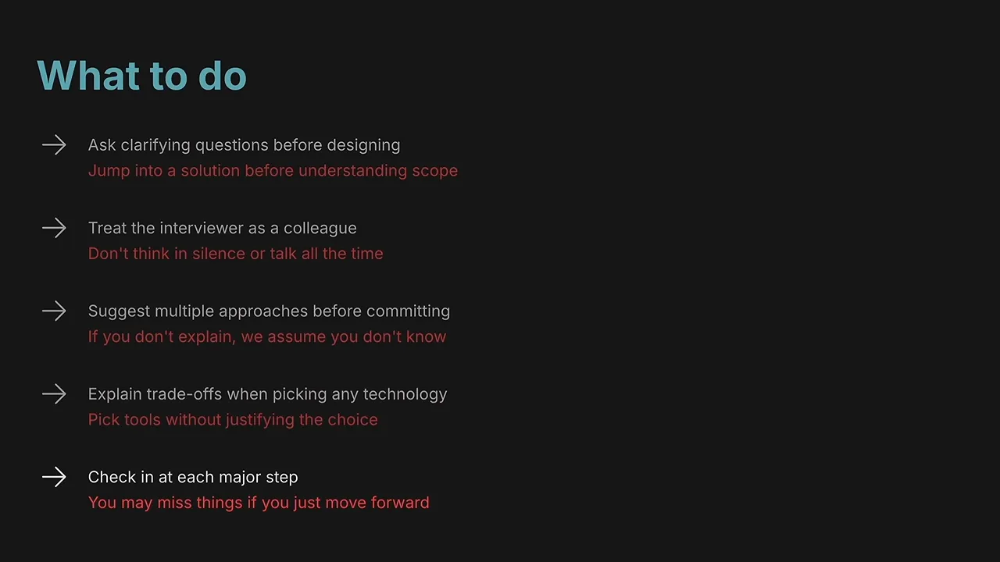
예를 들어 결제 시스템에서 SQL은 누가 봐도 당연한 선택이에요. 그래도 이유를 말하지 않으면 면접관은 지원자가 몰랐다고 보거나, 따로 물어야 해요. 묻지 않을 수도 있어요. 그래서 왜 NoSQL이 아닌지까지 말해요. 면접관을 대하는 태도도 두 극단을 피해요. 말없이 다이어그램만 그리는 것도, 침묵을 메우려고 혼자 계속 말하는 것도 안 돼요.
정리 슬라이드의 밑줄 친 문장이 이 섹션의 결론이에요. 아래 다섯 카드는 단계 이름을 한 단어로 줄인 거예요.
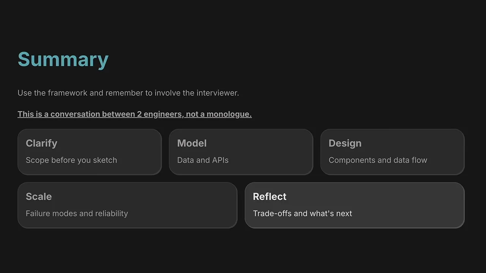
Spotify ①: 요구사항부터 읽기·쓰기 흐름까지
음악 스트리밍은 오디오 전달, 메타데이터 관리, 객체 스토리지가 한데 섞여 있어서 단골 문제예요. 강사는 일곱 단계로 풀어요. 요구사항과 용량 계획, 상위 아키텍처, 읽기·쓰기 흐름, API, 저장소, 확장, 그리고 시니어와 미드 레벨을 가르는 피라미드 순서예요.
요구사항과 가정
왼쪽 열이 규모와 핵심 기능, 오른쪽 열이 오디오 형식이에요. 손글씨 밑줄이 그어진 곳이 강사가 짚은 가정이에요.
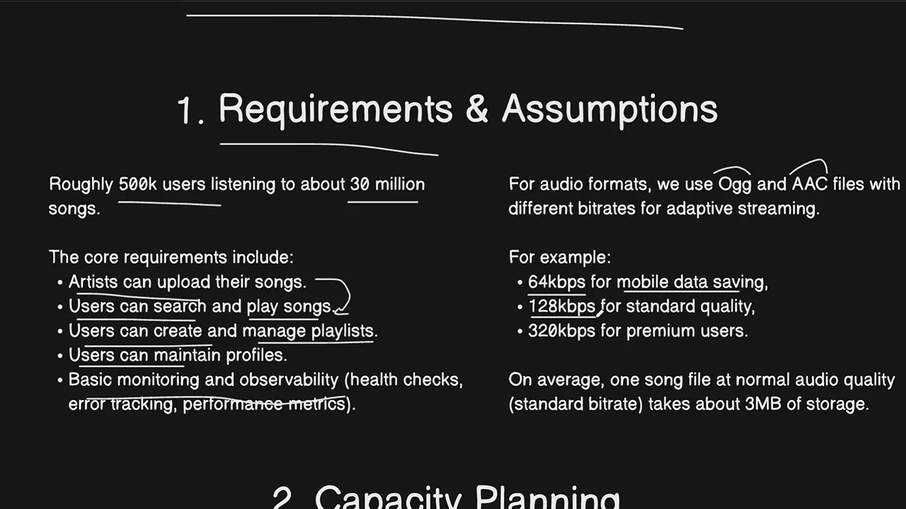
사용자 50만 명, 곡 3천만 개로 시작해요. 아티스트는 곡을 올리고, 사용자는 검색·재생하고 플레이리스트를 만들어요. 헬스 체크, 에러 추적, 성능 지표 같은 기본 모니터링도 범위에 넣어요. 음질은 데이터 절약용 64kbps, 표준 128kbps, 프리미엄 320kbps 세 가지예요.
용량 계획: 오디오가 거의 전부예요
네 덩어리로 나눠 계산해요. 슬라이드 왼쪽 위가 곡 저장소, 오른쪽 위가 곡 메타데이터, 왼쪽 아래가 사용자 메타데이터, 오른쪽 아래가 하루 대역폭이에요.
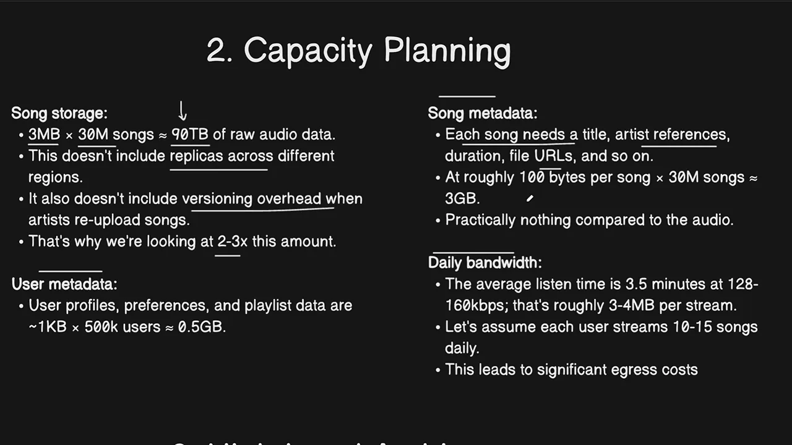
오디오는 3MB × 3천만 곡 = 약 90TB이고, 지역 복제와 재업로드까지 치면 2~3배를 잡아요. 곡 메타데이터는 100바이트 × 3천만 = 약 3GB, 사용자 정보는 1KB × 50만 = 약 0.5GB예요. 하루 대역폭은 평균 3.5분, 128~160kbps로 한 번 재생에 3~4MB, 한 사람이 하루 10~15곡을 듣는다고 보면 상당한 이그레스 비용이 나와요.
결론은 저장 비용도 대역폭도 오디오가 지배한다는 거예요. 그래서 설계의 핵심은 큰 파일을 어디에 두고 어떻게 내보낼지가 돼요.
상위 아키텍처
그림 왼쪽부터 따라가면 돼요. 모바일 앱이 HTTP(Hypertext Transfer Protocol) 요청을 로드 밸런서로 보내고, 로드 밸런서가 API 서버 셋 중 하나로 나눠요. API 서버는 위쪽 화살표로 SQL DB에 메타데이터를 묻고, 아래쪽 화살표로 블롭 스토리지용 서명된 URL(Uniform Resource Locator)을 만들어요.
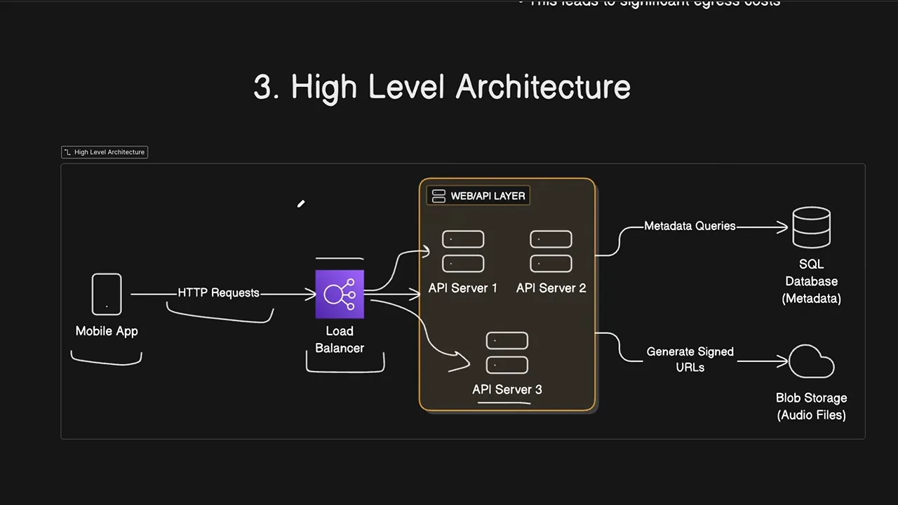
로드 밸런서 알고리즘은 라운드 로빈이나 최소 연결 수 방식을 쓰고, API 서버 헬스 체크도 맡겨요. 인증은 JWT(JSON Web Token)로 해요. 오디오를 SQL에 넣지 않는 이유는 크기 때문이에요. S3(Amazon Simple Storage Service) 같은 블롭 스토리지는 사실상 무한히 늘어나고, 내구성이 기본으로 들어 있고, 큰 파일을 싸게 보관해요. 오디오 주소는 서명된 URL로 줘요. 일정 시간이 지나면 만료되니 같은 주소가 영원히 열려 있지 않아요.
읽기 흐름: 곡 재생
시퀀스 다이어그램의 'JWT valid' 상자 안이 정상 흐름이에요. 5.1~5.4에서 API 서버가 SQL에서 곡 정보를 읽고, 서명된 URL을 만들어 함께 돌려줘요. 그 아래 'Audio streaming' 상자에서 앱이 블롭 스토리지와 직접 주고받아요.
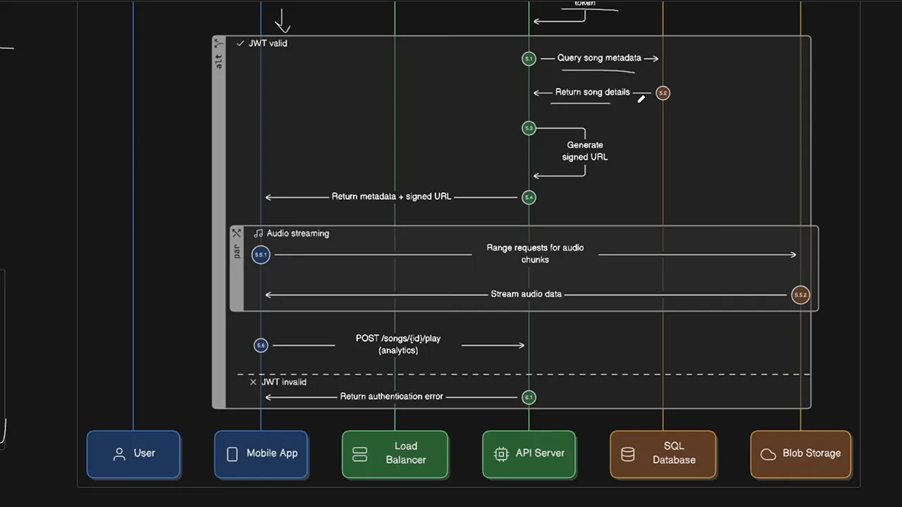
앱은 서명된 URL로 블롭 스토리지에 범위 요청을 보내 오디오를 조각 단위로 받아요. 재생 통계는 따로 POST /songs/{id}/play로 보내요. JWT가 틀리면 맨 아래 'JWT invalid' 구간처럼 인증 오류만 돌려주고 나머지는 하지 않아요.
쓰기 흐름: 아티스트 업로드
업로드 다이어그램 위쪽 'invalid file' 구간은 형식이나 크기가 맞지 않을 때 바로 거절하는 길이에요. 그 아래 'valid file' 구간이 정상 흐름이에요.
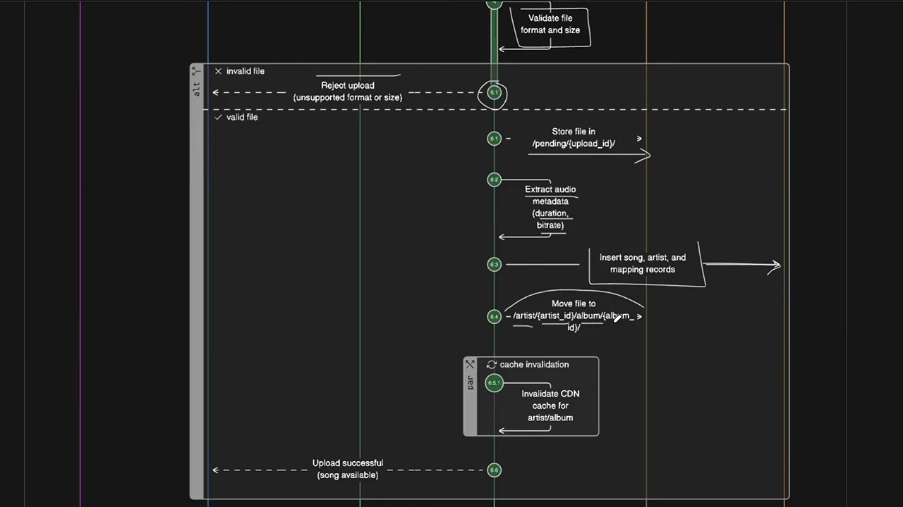
객체 스토리지에는 원래 폴더 구조가 없어요. 경로처럼 보이는 키 이름일 뿐이에요. 그래도 아티스트·앨범 단위로 경로를 잡아 두면 관리하기 편해요. CDN은 아티스트 페이지, 앨범 정보, 곡 정보를 사용자 가까이에 캐시해요. 새 곡이 올라오면 오래된 캐시를 지워야 사용자가 바로 최신 목록을 봐요.
Spotify ②: API, 저장소, 5천만 명으로 키우기
API 설계
엔드포인트를 네 묶음으로 나눠요. 슬라이드 왼쪽이 검색·탐색과 콘텐츠 접근, 오른쪽이 사용자 행동과 사용자 관리예요. 회색 상자는 요청 본문 예시예요.
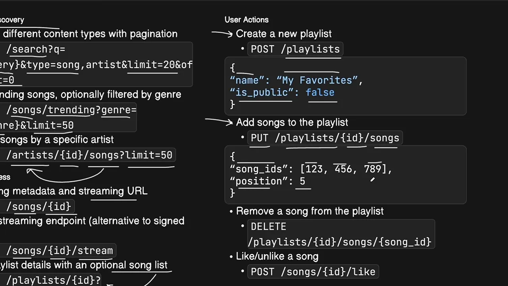
| 묶음 | 엔드포인트 | 메모 |
|---|---|---|
| 검색·탐색 | GET /search?q=&type=&limit=&offset=GET /songs/trending?genre=GET /artists/{id}/songs | limit 기본 20, offset으로 페이지 이동 |
| 콘텐츠 접근 | GET /songs/{id}GET /songs/{id}/streamGET /playlists/{id}?include_songs=true | stream은 서명된 URL의 대안 |
| 사용자 행동 | POST /playlistsPUT /playlists/{id}/songsDELETE /playlists/{id}/songs/{song_id}POST /songs/{id}/like | 추가 때 곡 ID(Identifier) 목록과 위치를 보내요 |
| 사용자 관리 | GET /users/me/playlistsGET /users/me/liked-songsPOST /users/me/follow/{artist_id} | 복수형 이름을 일관되게 써요 |
저장소와 스키마
오디오 파일은 바뀌지 않아요. 고칠 게 있으면 새로 올리고 옛 파일을 지워요. 메타데이터는 PostgreSQL이나 MySQL에 둬요. 화면의 표가 기본 스키마예요. 가운데 초록 songs 표를 중심으로 왼쪽 위 playlistitems가 플레이리스트와 곡을, 왼쪽 아래 artistsongs가 아티스트와 곡을 이어요.
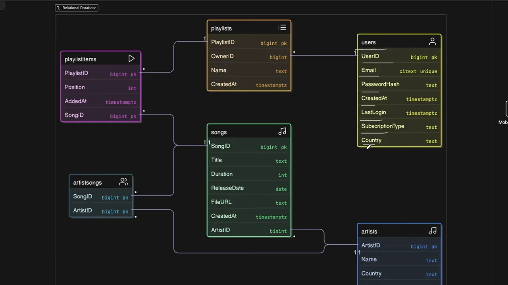
SQL을 고른 이유는 조인이 많아서예요. "내가 팔로하는 아티스트의 곡 전부" 같은 복잡한 질의도 쉽게 돼요. 데이터가 커지면 자주 찾는 컬럼에 인덱스를 걸어요. 곡 제목, 아티스트 이름, 그리고 플레이리스트-곡 조인 테이블의 곡 ID예요. 마지막 인덱스는 "이 플레이리스트의 곡"과 "이 곡이 들어간 플레이리스트"를 모두 빠르게 해 줘요.
사용자 5천만, 곡 2억으로 키우기
규모가 커지면 용량부터 다시 계산해요. 슬라이드 세 줄이 새 숫자예요.
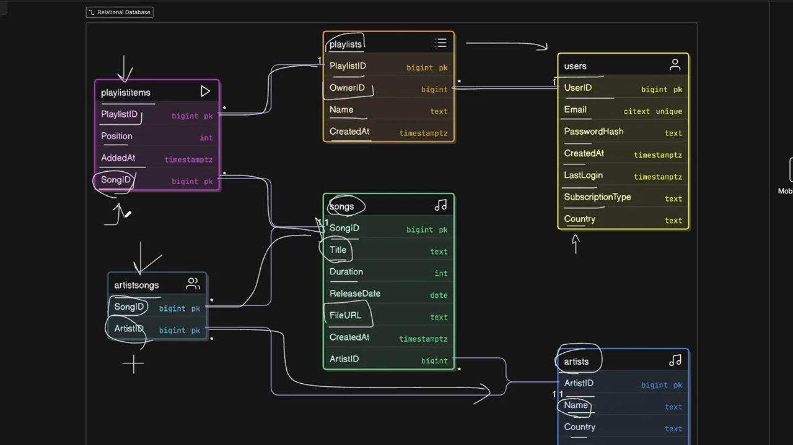
확장된 구조는 왼쪽에서 오른쪽으로 읽어요. 북미, 유럽, 아시아·태평양, 남미의 CDN 엣지, 지역별 로드 밸런서 두 대, 늘어난 API 서버가 차례로 놓여요. 강사는 CDN 옆에 'LRU'라고 적었어요.
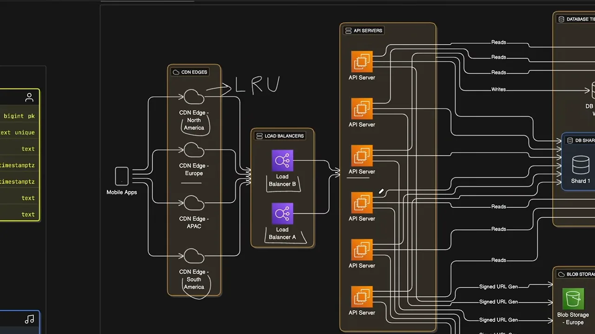
CDN 캐시가 가득 차면 LRU(Least Recently Used) 방식으로 가장 오래 안 쓴 콘텐츠부터 지우고, 캐시에 없으면 원본 저장소에서 가져와요. API 서버는 세션도 저장소도 갖지 않으니 그냥 늘려요. 반대로 말하면, 처음부터 정말 무상태로 설계해야 이렇게 늘릴 수 있어요.
DB 계층은 확대한 그림이 더 잘 보여요. 가운데 'DB Leader - Writes'가 쓰기를 받고, 점선 'Replication'으로 오른쪽 팔로워 셋에 복사해요. 아래 'DB SHARDS' 상자가 그다음 단계인 샤딩이에요.
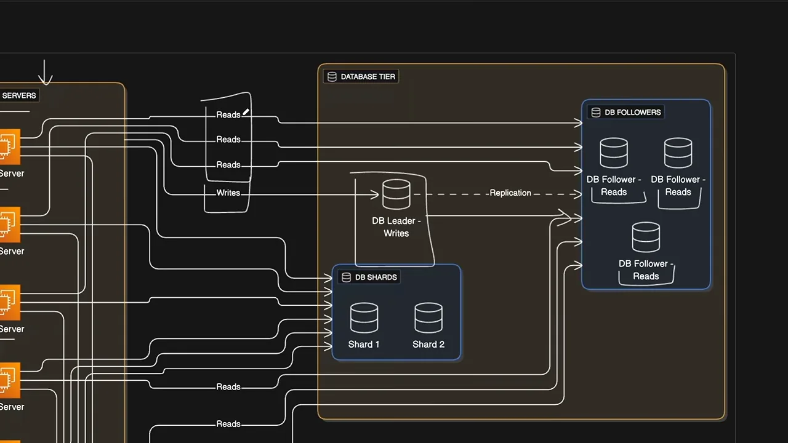
샤딩은 사용자를 미국·유럽처럼 지역으로 나누고, 곡은 아티스트 ID 범위로 나눠요. 관련 데이터가 한곳에 모여 성능이 좋아져요. 블롭 스토리지도 지역마다 두고, 유럽 사용자는 유럽 저장소에 올려요. 어디서든 접근은 서명된 URL로 해요. 강사가 강조하는 건 순서예요. 적은 사용자에게 과하게 설계하지 말고, 단순하게 시작해서 규모에 맞춰 늘려요.
시니어와 미드 레벨을 가르는 피라미드
Spotify 설계를 마치며 강사는 설계 작업을 피라미드로 그려요. 초록 바닥이 계획, 파란 가운데가 기술 선택, 보라 꼭대기가 코드예요. 면적이 곧 비중이에요.
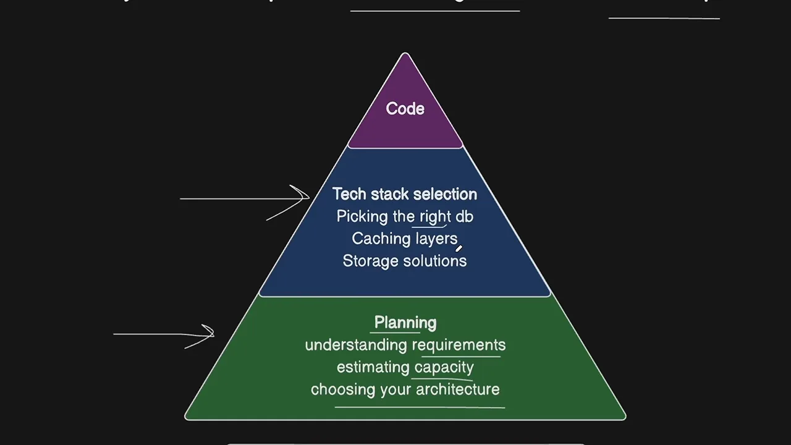
강사는 많은 미드 레벨 개발자가 이 피라미드를 거꾸로 세운다고 해요. 계획도 기술 선택도 없이 코드부터 쓰고 어디로 가는지 지켜본다는 거예요. 반대로 키보드에 손대기 전에 사용자 관점에서 문제를 생각하는 사람은 일자리를 찾느라 고생하지 않는다고 해요. 화면 문구로는 'Fundamental seekers'예요.
Booking ①: 요구사항, 트래픽 추정, 서비스 나누기
두 번째 사례는 Booking.com이나 Airbnb 같은 호텔 예약이에요. 강사는 흔한 실수부터 짚어요. 캐싱과 복제를 붙인 평범한 CRUD(Create, Read, Update, Delete) 앱으로 보는 거예요. 마지막 남은 방 하나를 두 사람이 동시에 잡을 때, 단순히 조회한 뒤 삽입하면 더블 부킹이 생겨요. 카드 두 장이 결제되고, 환불과 화난 고객이 남고, 다음엔 믿지 못할 서비스가 돼요.
그래서 이 문제는 동시성, 여러 시스템에 걸친 데이터 일관성, 장애를 전제로 한 설계를 함께 시험해요. 패턴을 외우기보다 실제로 생길 문제와 해결책, 해결책 사이의 트레이드오프를 이해하는 게 목표예요.
질문으로 범위 정하기
슬라이드 맨 위 'Clarifying Questions'가 먼저 던질 질문 넷이에요. 그 아래로 기능 요구사항과 비기능 요구사항이 이어져요.
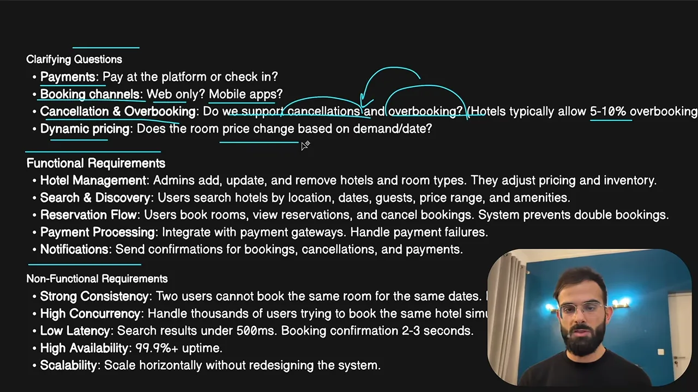
| 질문 | 이번 설계의 답 |
|---|---|
| 결제를 플랫폼에서 받나요, 체크인 때 받나요? | 플랫폼에서 받아요. 결제 시스템이 필요해요 |
| 웹만인가요, 모바일 앱도 있나요? | 둘 다예요 |
| 취소와 오버부킹을 지원하나요? | 둘 다 지원해요. 호텔은 취소를 감안해 보통 5~10% 더 받아요 |
| 가격이 고정인가요, 수요에 따라 바뀌나요? | 동적 가격이에요. 성수기에는 오르고, 녹화 중인 방도 크리스마스라 평소의 세 배였다고 해요 |
기능 요구사항은 관리자 패널(호텔 추가·수정·삭제), 위치·날짜·인원·가격으로 검색, 예약·조회·취소, 결제 연동, 확정 알림이에요. 핵심 기능을 고르는 요령도 알려 줘요. "이걸 빼면 더 이상 Booking.com이 아닌가?"를 물어보면 돼요. 위치로 검색할 수 없다면 쓸모없는 앱이 되겠죠.
비기능 요구사항에서 일관성을 둘로 나눈 게 중요해요. 예약은 강한 일관성이 필요하지만, 검색과 탐색은 최종 일관성이면 충분해요. 검색은 500ms 안, 예약 확정은 2~3초 안, 가용성은 99.9%이고, 나중에 처음부터 다시 설계하지 않고 수평으로 늘릴 수 있어야 해요.
깔때기로 트래픽 추정하기
예약 사이트의 트래픽은 깔때기 모양이에요. 그림의 세 칸이 방문자, 예약 페이지까지 온 사람, 실제 예약한 사람이고, 오른쪽 숫자가 각 단계의 비율이에요.
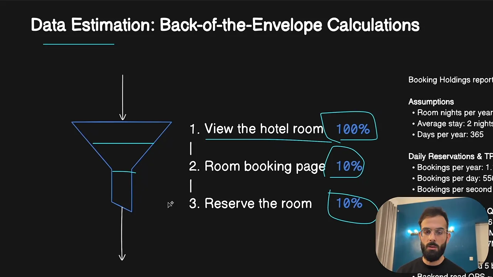
계산은 두 방향 중 하나로 해요. 위에서 내려오려면 SimilarWeb 같은 도구로 본 월 방문 수에서, 아래에서 올라가려면 연간 예약 수에서 출발해요. 면접관에게 숫자 하나만 받으면 나머지는 계산할 수 있어요. 아래 슬라이드가 두 계산을 모두 보여 줘요.
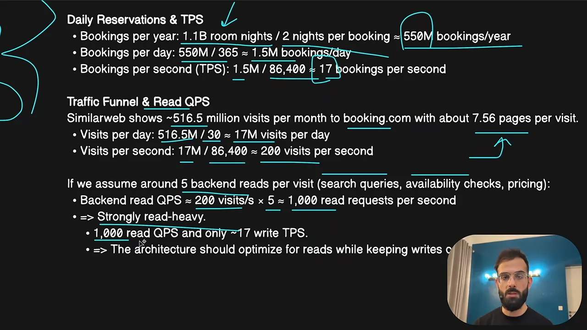
쓰기는 연간 숙박 11억 박(Booking Holdings가 2024년에 발표한 숫자라고 슬라이드에 적혀 있어요)을 평균 2박으로 나눠 연 5.5억 건, 365로 나눠 하루 150만 건, 86,400초로 나눠 초당 약 17건이에요. 읽기는 월 방문을 30일로 나눠 하루 1,700만, 다시 초로 나눠 초당 약 200 방문이에요. 방문 한 번에 검색·재고 확인 같은 백엔드 읽기가 5번 일어난다고 보면 약 1,000 QPS가 돼요. 영상은 말로 '월 5억 방문, 방문당 8페이지'라고 하고, 슬라이드는 5억 1,650만, 7.56페이지로 적었어요. 결과는 같아요.
- 기본값 그대로 두고 결과를 보세요. 쓰기 약 17 TPS, 읽기 약 1,000 QPS로 영상의 숫자와 같아요.
- 평균 숙박을 1박으로 내려 보세요. 쓰기가 약 35 TPS로 두 배가 되지만, 읽기가 여전히 수십 배 많아요.
- 방문당 읽기를 10회로 올려 보세요. 읽기가 2,000 QPS 가까이 돼요. 다음 섹션의 16개 샤드로 나누면 샤드당 약 125 QPS예요.
서비스를 나눈 상위 설계
그림 왼쪽 'CLIENTS'의 웹·모바일 앱이 CDN을 거쳐 분홍색 API 게이트웨이로 들어가요. 가운데 'SERVICES' 상자에 호텔·예약·요금·결제 서비스와 알림 서비스가 있고, 오른쪽 'DATA STORES'의 PostgreSQL과 Redis로 이어져요. 결제 서비스는 오른쪽 아래 외부 결제 게이트웨이와 연결돼요.
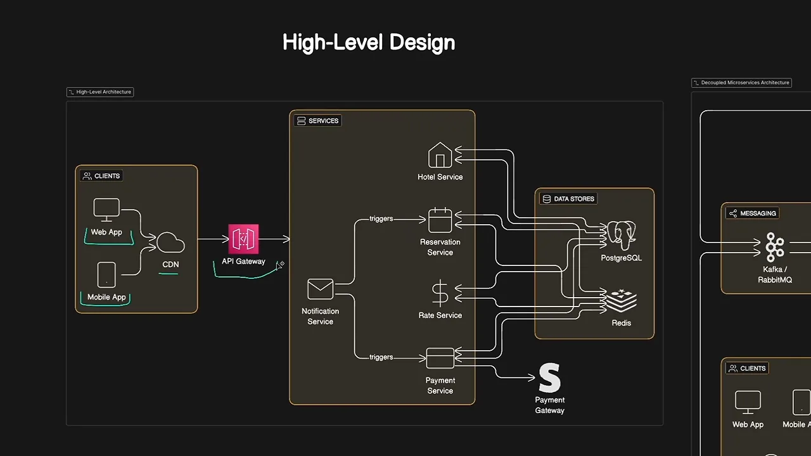
| 구성 요소 | 하는 일 |
|---|---|
| CDN | 호텔 사진, 미디어, JavaScript 같은 정적 자산 |
| API 게이트웨이 | 단일 진입점. 인증, 속도 제한, 서비스 라우팅, 같은 서비스 인스턴스 사이의 부하 분산 |
| 호텔 서비스 | 호텔·방 정보. 거의 바뀌지 않아 캐시하기 좋아요 |
| 예약 서비스 | 예약 로직, 재고 확인, 생성과 취소. 동시성을 여기서 처리해요 |
| 요금 서비스 | 날짜별 방 가격, 수요에 따른 동적 가격 |
| 결제 서비스 | Stripe, PayPal, Apple Pay, Google Pay 등 연동 |
| 알림 서비스 | 예약·결제 서비스와 이어져 이메일과 푸시를 보내요 |
데이터는 ACID(Atomicity, Consistency, Isolation, Durability)가 필요해서 PostgreSQL로 시작하고, 잘 안 바뀌는 데이터는 Redis에 캐시해요. 그런데 1,000 QPS의 검색을 PostgreSQL 혼자 받기는 버겁다고 강사는 봐요. 그래서 검색 서비스와 Elasticsearch를 따로 붙여요. 호텔 이름·설명 전문 검색, 반경 5km 같은 위치 필터, 가격·평점 필터를 PostgreSQL보다 훨씬 빠르게 해요. 대신 최종 일관성이에요.
메시지 큐로 서비스 떼어 내기
확대한 그림에서 왼쪽 위 'MESSAGING' 상자의 Kafka/RabbitMQ를 보세요. 결제 서비스가 여기에 이벤트를 넣으면, 위로는 알림 서비스로 'Send Email/Push'가, 아래로는 검색 서비스로 'Update Availability'가 나가요. 오른쪽 데이터 저장소는 결제 DB, 가격 캐시, 검색 인덱스, 호텔 DB, 예약 DB로 나뉘었어요.
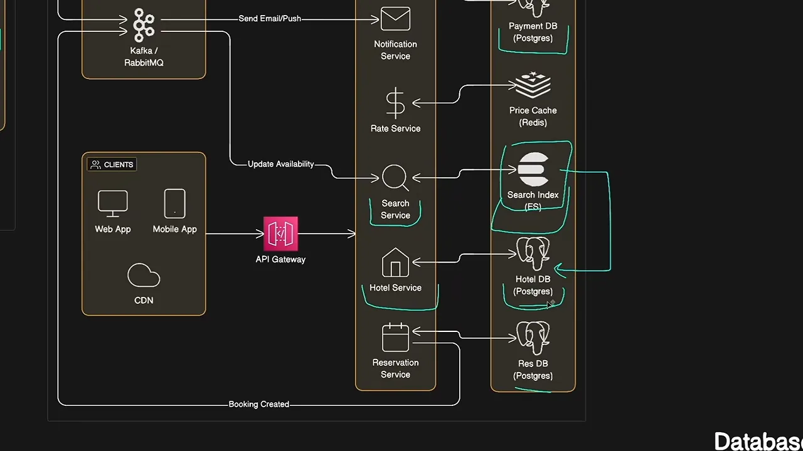
그래서 결제 직후에 검색하면 그 방이 아직 비어 있는 것처럼 보일 수 있어요. 그래도 예약 단계에서 진짜 DB를 확인하니 예약은 막혀요. 시간이 지나면 검색 인덱스도 같아져요.
마지막으로 서비스를 어떻게 쪼갤지 세 가지를 비교해요.
| 방식 | 좋은 점 | 문제 |
|---|---|---|
| 모놀리스 하나 | 트랜잭션이 단순해요 | 수백 명이 한 코드베이스에서 일하면 독립 배포와 확장이 어려워요 |
| 완전한 마이크로서비스 | 서비스마다 DB를 따로 가져요 | 모놀리스엔 없던 분산 트랜잭션과 일관성 문제가 생겨요 |
| 실용적 마이크로서비스 | 서비스는 앱 계층에서 나누고, 예약과 호텔처럼 강하게 묶인 데이터는 한 DB에 둬요 | 로컬 ACID 트랜잭션을 그대로 쓸 수 있어요. 영상이 고른 방식이에요 |
Booking ②: API·데이터 모델과 더블 부킹 막기
API는 REST(Representational State Transfer)로 만들어요. 그림에서는 프론트엔드가 각 서비스를 직접 부르지만, 강사는 마이크로서비스가 많으면 프론트엔드 앞에 GraphQL 계층을 두는 방식도 흔하다고 덧붙여요. 프론트엔드는 GraphQL 스키마만 알고, 서비스 사이 라우팅은 그 계층이 맡아요.
API: 호텔, 방, 예약, 검색
| 리소스 | 엔드포인트 | 어디서 읽나요 |
|---|---|---|
| 호텔 목록 | GET /hotels?필터 | Elasticsearch |
| 호텔 상세 | GET /hotels/{id} | PostgreSQL |
| 호텔 관리(관리자) | POST /hotels · PUT/PATCH /hotels/{id} · DELETE /hotels/{id} | PostgreSQL에 먼저 쓰고, 검색 인덱스는 나중에 따라와요. 생성은 201로 응답해요 |
| 방 유형(하위 리소스) | GET/POST /hotels/{id}/rooms · PUT/DELETE /hotels/{id}/rooms/{id} | PostgreSQL |
| 예약 | GET /reservations · GET /reservations/{id} · POST /reservations · PUT /reservations/{id} · DELETE /reservations/{id} | PostgreSQL |
| 검색 | GET /search?location&checkIn&checkOut&guests&beds&priceRange | Elasticsearch |
취소(DELETE)는 DB에서 취소 가능 기간인지 확인해요. 일주일 전이면 되고, 직전이면 안 되는 식이에요. 날짜 변경은 PUT으로 해요.
같은 사람의 중복 클릭: 멱등성 키
더블 부킹에는 두 가지 경우가 있어요. 한 사람이 예약 버튼을 두 번 누르는 경우와, 다른 두 사람이 마지막 방을 동시에 잡는 경우예요. 첫 번째는 API에서 바로 막을 수 있어요. 시퀀스 다이어그램 가운데 'POST /v1/reservations (with idempotency key)' 아래 코드 상자가 요청 본문이에요.
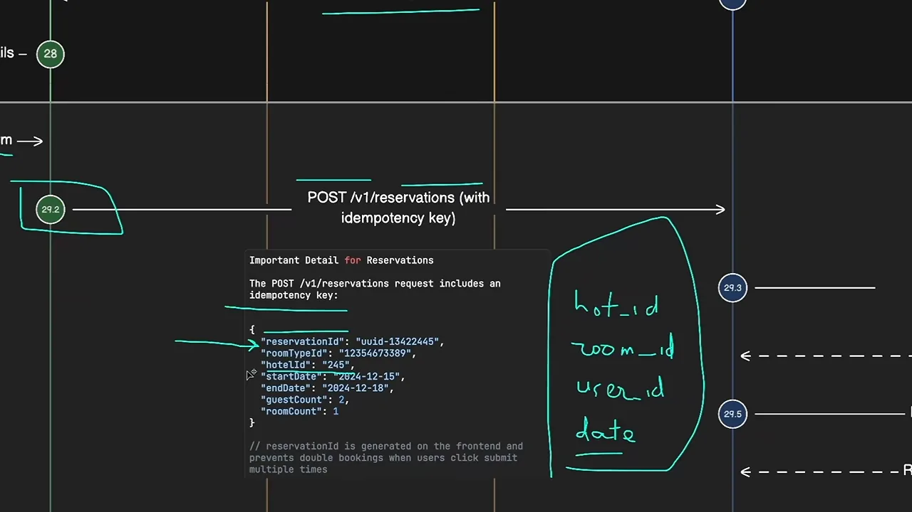
reservationId가 멱등성 키예요. 오른쪽 손글씨는 백엔드에서 만드는 다른 방법이에요. 영상 1:19:47에서 보기프론트엔드가 예약 폼을 열 때 UUID(Universally Unique Identifier) 하나를 만들어 reservationId로 보내요. 서버는 이 ID가 이미 있는지 먼저 보고, 없으면 새로 넣고, 있으면 이미 만든 예약을 그대로 돌려줘요. 이 값이 멱등성 키예요.
백엔드에서 만드는 방법도 있어요. 호텔 ID, 방 ID, 사용자 ID에 날짜나 타임스탬프를 섞어 해시를 만들어요. 날짜를 빼면 같은 사람이 나중에 같은 호텔을 다시 예약하지 못하게 돼요. 강사는 한 사람의 중복 클릭만 막을 거라면 프론트엔드 UUID가 훨씬 가볍다고 봐요. 예약이 확정되면 Kafka 이벤트가 나가 사용자와 호텔 주인에게 알림이 가요.
데이터 모델: 방이 아니라 방 유형을 팔아요
핵심은 방 번호가 아니라 방 유형을 예약한다는 점이에요. "더블 퀸 침대 방"을 사고, 방 번호는 체크인 때 정해요. 테이블은 이렇게 이어져요.
| 테이블 | 주요 컬럼 | 관계와 이유 |
|---|---|---|
| hotel | hotel_id, name, address, location, description | 같은 브랜드의 다른 지점은 ID를 달리하거나 hotel_groups로 묶어요 |
| room_type | room_type_id, name, description, max_occupancy, amenities, hotel_id | 호텔 하나에 여러 유형(1:N) |
| room_type_rate | date, rate, room_type_id, hotel_id | 기본 100, 전망 150, 조식 포함 200처럼 유형별 요금(1:N) |
| room | room_id, floor, number, is_available, room_type_id, hotel_id | 체크인 때 배정하는 실제 방 |
| room_type_inventory | hotel_id, room_type_id, date, total_inventory, total_reserved | 호텔·유형·날짜마다 한 행. 재고 확인의 중심 |
| reservation | reservation_id, room_type_id, hotel_id, guest_id, start_date, end_date, status, room_count | 손님 한 명이 여러 예약(1:N) |
| transaction | transaction_id, reservation_id, transaction_type, amount | 예약 하나에 여러 거래(1:N). 금액은 음수도 돼요 |
화면에서 보라색 reservation 표와 그 왼쪽 transaction 표를 보세요. 강사가 손글씨로 'reserved, cancel, date'라고 적은 게 거래가 여러 줄 생기는 세 경우예요.
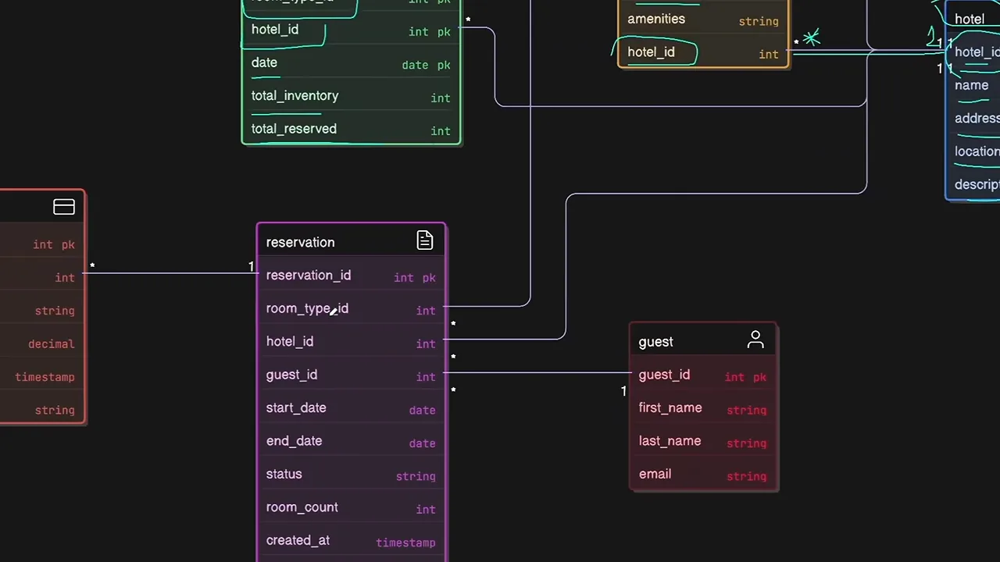
재고를 방 단위가 아니라 호텔·유형·날짜 단위로 세면 좋은 점이 있어요. 가용 여부를 한꺼번에 갱신할 수 있고, 가격·검색과 맞추기 쉽고, 오버부킹 계산이 단순해져요. room_type_inventory는 2년치를 미리 채워 두고, 하루 한 번 크론 작업이 새 날짜를 더해요.
재고 확인과 오버부킹
12월 23~27일을 예약한다면, 그 기간의 재고 행을 읽어서 날짜마다 조건을 확인해요. 슬라이드 위가 조회 쿼리, 아래가 조건식이에요.
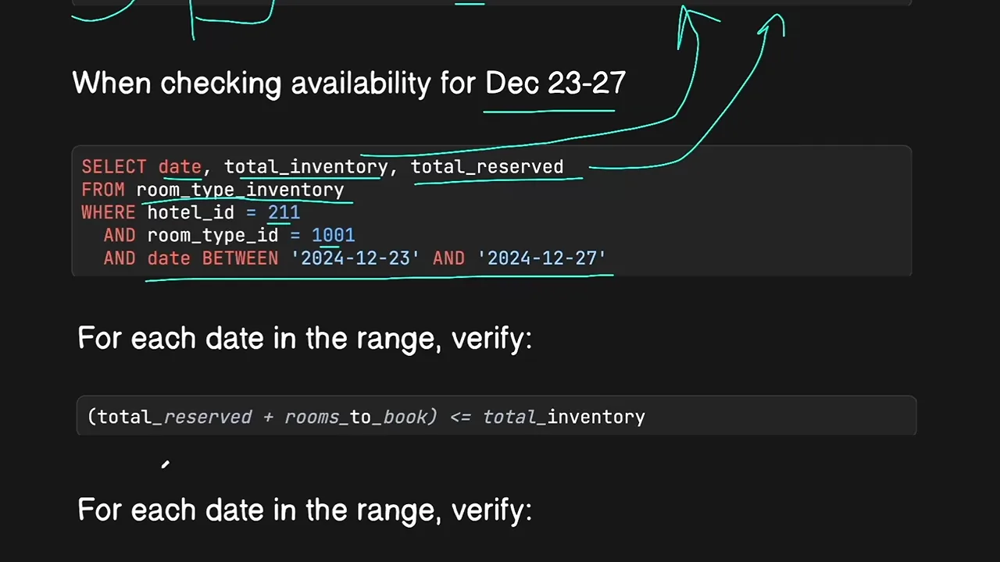
총 재고 100, 예약 92면 남은 방은 8개예요. 한 방을 더 잡으면 93 ≤ 100이라 통과해요. 오버부킹을 10% 허용한다면 오른쪽 항에 계수를 곱해요. 슬라이드 아래쪽에 손글씨로 100이 110이 된 게 보여요.
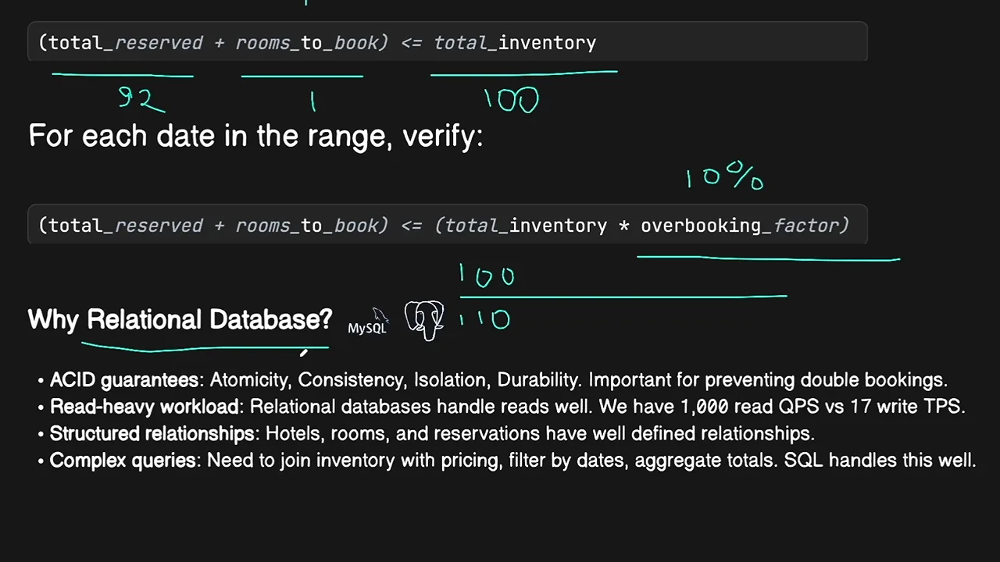
같은 슬라이드 아래쪽에 관계형 DB를 고른 이유가 네 줄로 정리돼 있어요. ACID가 더블 부킹을 막는 데 필수이고, 읽기 중심 부하를 잘 받고(부족하면 Elasticsearch와 함께 써요), 호텔·방·예약 관계가 뚜렷하고, 재고와 가격을 조인하고 날짜로 거르고 합계를 내는 복잡한 질의가 필요해요.
다른 두 사람의 동시 예약
두 번째 경우가 진짜 문제예요. 아래 타임라인이 READ COMMITTED에서 일어나는 일이에요. Time 1과 Time 2에서 A와 B가 모두 예약 99, 총 100을 읽어요. Time 3과 4에서 둘 다 99 + 1 ≤ 100을 통과해요. Time 5부터 둘 다 쓰면 예약이 101건이 돼요.
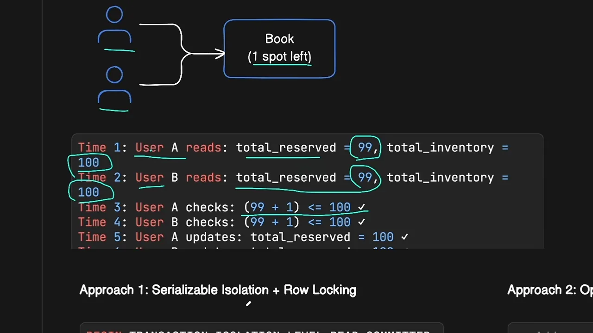
READ COMMITTED는 PostgreSQL의 기본 격리 수준이에요. 다른 트랜잭션이 커밋한 데이터만 보이지만, 내가 읽은 뒤 쓰기 전까지 다른 트랜잭션이 끼어드는 건 막지 못해요. 해결책은 둘이에요.
SERIALIZABLE | READ COMMITTED + SELECT ... FOR UPDATE | |
|---|---|---|
| 방법 | 트랜잭션 시작 때 격리 수준을 SERIALIZABLE로 지정해요 | 기본 격리 수준 그대로, 재고 행을 읽을 때 잠가요 |
| 장점 | 구현이 단순하고, TPS가 낮으면 잘 돌아가요 | 같은 행을 노리는 트랜잭션만 줄을 서고, 나머지는 병렬로 가요 |
| 단점(영상 설명) | 트랜잭션끼리 막아서 TPS가 높으면 확장이 어렵고, 여러 자원을 다른 순서로 잠그면 교착 상태가 생길 수 있어요. 잠금 타임아웃과 짧은 트랜잭션으로 줄여요 | 강사는 이쪽을 더 나은 해법으로 봐요 |
코드에서는 기본 격리 수준으로 트랜잭션을 열고, 재고 조회 끝에 ORDER BY date FOR UPDATE를 붙여요. 그다음 애플리케이션에서 확인하고, 되면 재고를 올리고 예약을 넣어요.
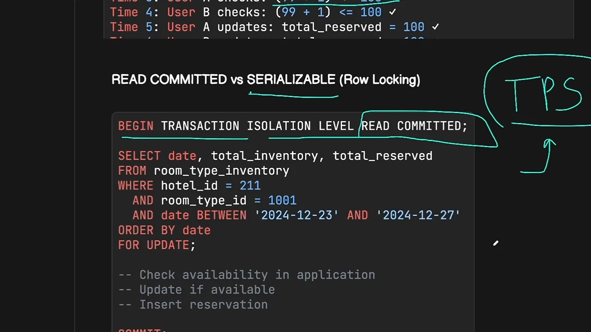
FOR UPDATE가 해당 날짜 행에 대한 접근만 순서대로 줄 세워서 경쟁 조건을 막아요. 영상 1:36:02에서 보기ORDER BY date도 의미가 있어요. 모든 트랜잭션이 날짜 순서대로 행을 잠그니, 서로 다른 순서로 잠가서 생기는 교착 상태를 피할 수 있어요.
Booking ③: 샤딩·캐시·검색·복제
읽기 1,000 QPS, 쓰기 17 TPS를 버티려면 결국 DB를 나눠야 해요. 일반 쿼리가 눈에 띄게 느려지면 그때가 신호예요. 이 섹션은 샤딩, 캐시, 검색, 복제를 차례로 다뤄요.
샤딩: 호텔 ID로 나눠요
샤딩에서 가장 중요한 결정은 어떤 필드로 나눌지예요. 강사는 호텔 ID를 골라요. 검색은 대부분 호텔부터 걸러서 위치를 맞추고, 그다음 그 호텔의 방 유형을 가져와요. 한 호텔의 데이터가 한 샤드에 모이니 샤드를 넘나드는 조인이 없고, 트랜잭션도 샤드 안에서 끝나요.
그림은 16개 샤드에 부하를 나눈 모습이에요. 오른쪽 초록 샤드 옆 글씨가 샤드 하나가 받는 양이에요.
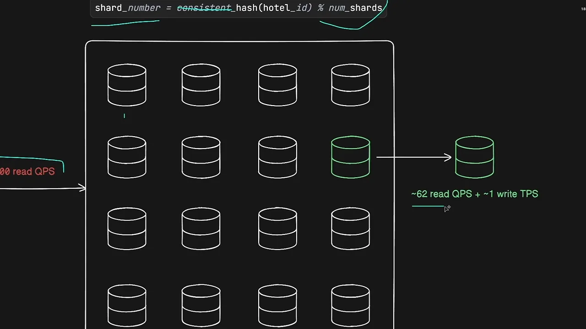
처음에는 hash(hotel_id) % 샤드 수로 나눠요. 샤드 수가 자주 바뀌지 않을 땐 이걸로 충분해요. 문제는 샤드를 하나 더할 때예요. 17번째 샤드를 넣으면 나머지가 거의 다 바뀌어서 1~16번의 데이터를 거의 전부 다시 섞어야 해요. 일관된 해싱은 새 샤드가 맡을 몫, 약 17분의 1만 옮겨요.
강사가 말로 설명한 해시 링을 그림으로 옮겼어요. 왼쪽은 모듈로 방식, 오른쪽은 해시 링이에요. 빨간 부분이 옮겨야 하는 데이터예요.
링에서는 서버와 키를 모두 원 위의 점으로 놓고, 키는 시계 방향으로 가장 가까운 서버에 저장돼요. 새 서버를 넣으면 새 서버와 직전 서버 사이 구간의 키만 영향을 받아요. 샤드 수가 적고 거의 안 바뀌면 모듈로, 자주 늘릴 거면 일관된 해싱이에요.
재고 캐시와 무효화
자주 읽는 재고는 Redis나 Memcached에 캐시해요. 키는 inventory:{hotel_id}:{room_type_id}:{date}, 값은 총 재고 100과 예약 87 같은 숫자예요. 오버부킹 비율 10%는 캐시에 넣지 않고 고정값으로 따로 둬요. TTL은 5분이에요.
흐름도는 위아래 두 단계로 읽어요. 위쪽 검색 단계는 Redis를 먼저 보고, 'Cache hit?'에서 Yes면 바로 보여 주고 No면 DB에서 읽어 Redis를 채워요. 아래 초록 예약 단계는 DB로 검증하고 쓴 뒤, 빨간 상자에서 해당 캐시 키를 지워요.
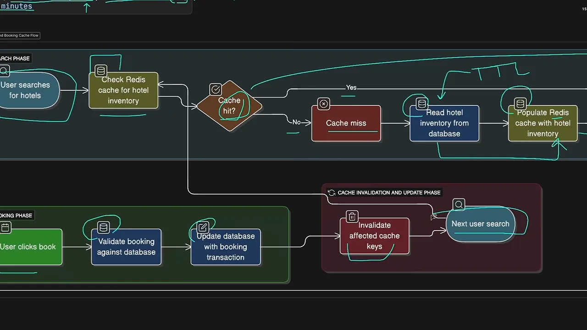
TTL이 만료된 경우도 캐시 미스처럼 다뤄요. DB에서 읽고, 캐시에 넣고, 보여 줘요.
왜 PostgreSQL로 검색하면 안 될까요
Elasticsearch는 검색과 분석에 특화된 DB예요. PostgreSQL은 "ID가 123인 행"이나 "이걸 넣어" 같은 정확한 작업에 강하고, Elasticsearch는 "이 글과 대충 맞는 문서를 관련도 순으로, 여러 조건으로, 수백만 건에서 빠르게"에 강해요. 슬라이드 위쪽 다섯 줄이 PostgreSQL로 검색할 때의 문제, 아래쪽이 Elasticsearch가 잘하는 일이에요.
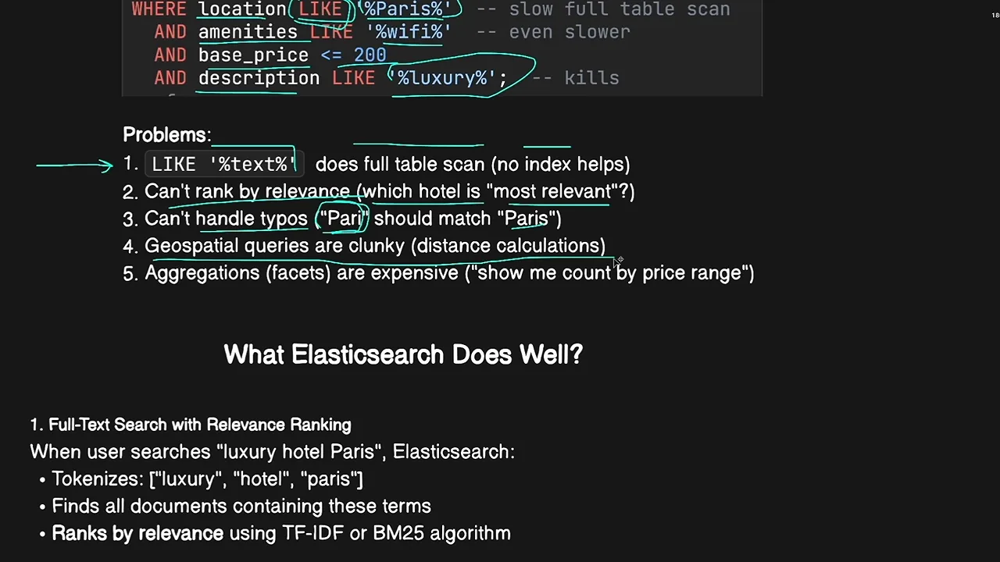
LIKE는 인덱스를 못 타서 표 전체를 훑어요. 파리 호텔이 전체의 10%도 안 돼도 모든 행을 봐야 해요. 영상 1:45:50에서 보기| 할 일 | PostgreSQL LIKE | Elasticsearch |
|---|---|---|
| 'luxury hotel paris' 검색 | LIKE '%luxury%'로 풀 스캔 | 'luxury', 'hotel', 'paris'로 토큰화해 찾아요 |
| 관련도 순위 | 못 해요 | TF-IDF나 BM25(Best Matching 25)로 순위를 매겨요 |
| 오타 'Pari' | 못 찾아요 | 편집 거리 1로 'Paris'를 찾아요 |
| 좌표 반경 5km | 거리 계산이 번거로워요 | 공간 인덱스가 있어요 |
| 가격대별 개수 같은 집계 | 비싸요 | 잘해요 |
Elasticsearch를 PostgreSQL과 맞추기
데이터는 사실상 복제해요. SQL의 호텔, 방 유형, 편의시설 테이블을 조인 없이 JSON(JavaScript Object Notation) 문서 하나로 펴서 넣어요. 진실의 원천은 여전히 PostgreSQL이에요. 예약 가능 여부와 오버부킹은 PostgreSQL로만 판단하고, 검색만 Elasticsearch에서 해요.
둘을 맞추는 방법이 변경 데이터 캡처(CDC(Change Data Capture))예요. 슬라이드 왼쪽 코드 상자가 데이터가 흐르는 순서이고, 오른쪽 문장이 각 단계 설명이에요.
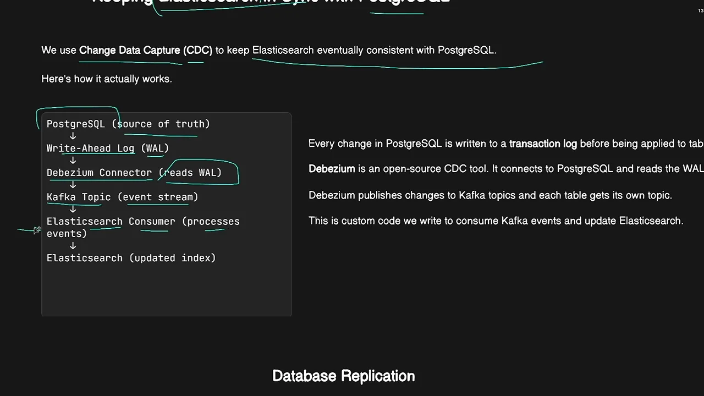
PostgreSQL은 모든 변경을 테이블에 반영하기 전에 WAL(Write-Ahead Log)에 먼저 적어요. 오픈소스 CDC 도구인 Debezium이 이 로그를 실시간으로 읽어 테이블마다 Kafka 토픽에 발행해요. 우리가 짠 소비자가 이벤트를 받아 Elasticsearch 인덱스를 고쳐요. 로그가 남아 있으니 장애가 나도 이어서 복구할 수 있어요.
읽기 복제본과 '방금 쓴 사람' 처리
샤딩이 쓰기와 데이터 양을 나눈다면, 복제는 읽기를 나눠요. 주 DB에 쓰고, 다른 가용 영역의 읽기 복제본으로 복사해서 사용자는 가까운 복제본에서 읽어요. 단, 복제는 늦을 수 있어요. 코드가 그 처리를 보여 줘요.
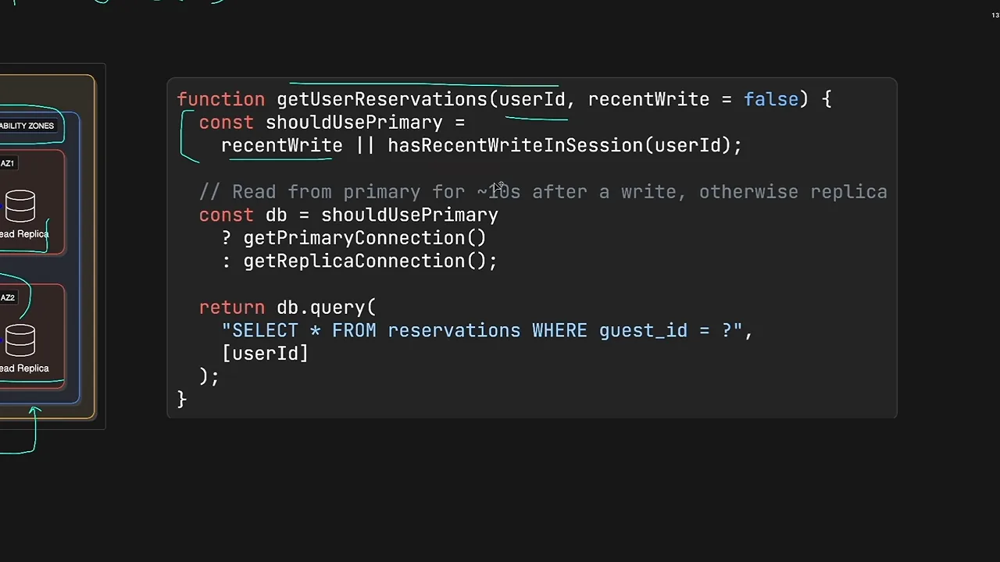
지역별로 나누고 쓰기는 한곳에
마지막 그림은 지리 기반 로드 밸런서를 중심으로 읽어요. 왼쪽 미국·유럽·아시아 사용자가 가운데 'Geo/Latency Load Balancer'를 거쳐 오른쪽 지역 상자(us-east-1, eu-west-1, ap-southeast-1)로 가요. 지역마다 Redis, DB 복제본, Elasticsearch가 있고, 가운데 'Primary Write DB'는 하나예요.
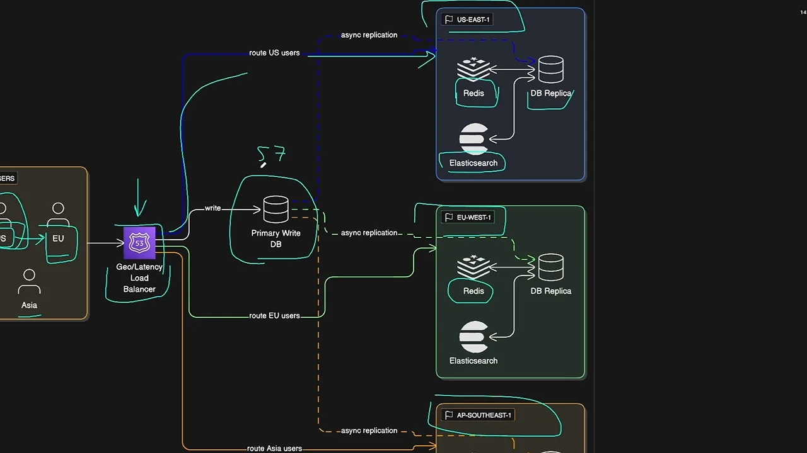
대부분 미국 사용자는 미국 호텔을, 유럽 사용자는 유럽 호텔을 찾아요. 그래서 지연 기반 라우팅이 맞아요. 미국 지역 Redis에 유럽 호텔까지 캐시할 이유도 없어요. 주 DB는 하나로 둬요. 샤드 7번처럼 샤드 하나라도 쓰기는 한곳에서만 받고, 지역마다 복제본을 둬요.
WhatsApp ①: 요구사항, 규모, 연결 방식, 데이터
세 번째 사례는 WhatsApp 같은 메신저예요. 시니어·스태프 면접에 자주 나오는 이유가 있어요. 상태를 유지하는 연결, 실시간 전달, 일관성과 규모, 부분 장애와 재해 복구, 여러 기기 동기화를 한꺼번에 다뤄야 하거든요. 강사는 수천 명용 단순한 구조로 시작해서 수십억 명으로 키우고, 어디서 깨지는지 찾아 고치는 순서로 가요.
요구사항
슬라이드 위 'Core requirements'가 기능, 아래 'Non-functional requirements'가 비기능 요구사항이에요. 손글씨 밑줄이 강사가 특히 짚은 곳이에요.
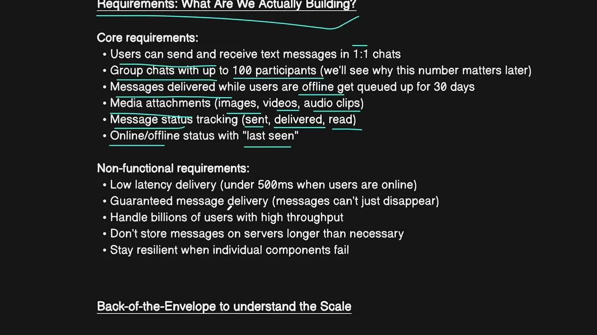
봉투 뒷면 계산
슬라이드는 사용자 지표, 메시지 추정, 저장량, 대역폭 순서로 내려가요.
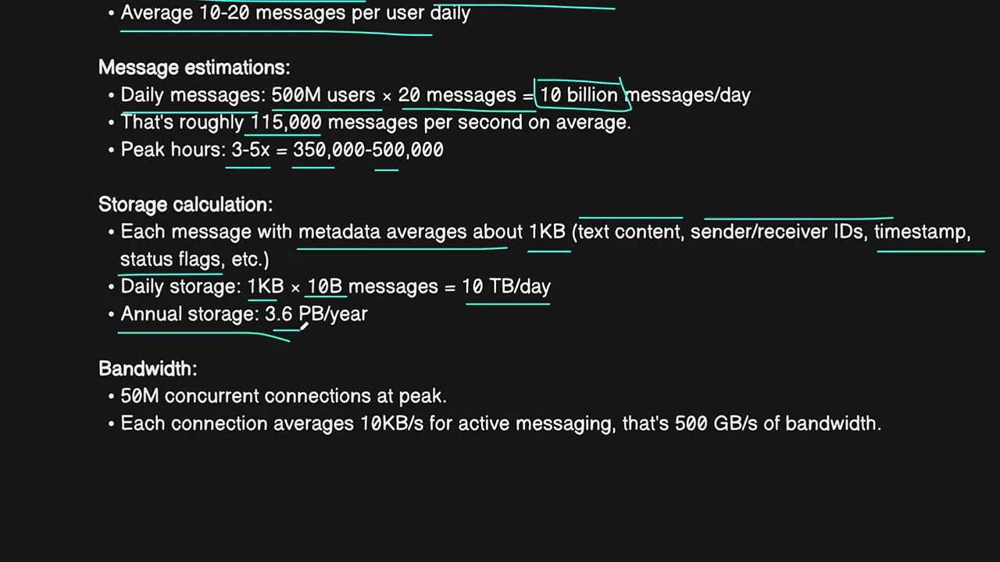
| 항목 | 계산 | 결과 |
|---|---|---|
| 사용자 | 가입 10억, DAU(Daily Active Users) 5억, 피크 동시 접속 5천만, 1인 하루 10~20건 | — |
| 하루 메시지 | 5억 × 20건 | 100억 건(DB 쓰기 100억 번) |
| 초당 쓰기 | 100억 ÷ 86,400 | 평균 약 11만 5천, 피크 3~5배면 35만~50만 |
| 저장량 | 1KB × 100억 | 하루 10TB, 1년 3.6PB |
| 대역폭 | 5천만 연결 × 10KB/s | 초당 500GB |
대부분의 메시지는 몇 초 안에 전달되고 서버에서 지워져요. 사용자는 기기에 받아 두고, 원하면 Google Drive 같은 곳에 백업해요. 미전달 메시지만 30일 보관하고, 서버에 기록을 남기는 사용자는 10% 정도로 잡아요. 강사는 이렇게 불필요한 데이터를 안 쥐고 있어서 WhatsApp이 적은 인프라로 돈다고 설명해요.
첫 번째 구조
그림 왼쪽 클라이언트에서 로드 밸런서를 거쳐 가운데 'CHAT SERVERS'로 들어가요. 채팅 서버에서 위로는 메시지 큐 → 저장 서비스 → 메시지 DB가, 오른쪽으로는 연결 캐시와 블롭 스토리지 → CDN이, 아래로는 알림 서비스와 프레즌스 서비스가 뻗어요.
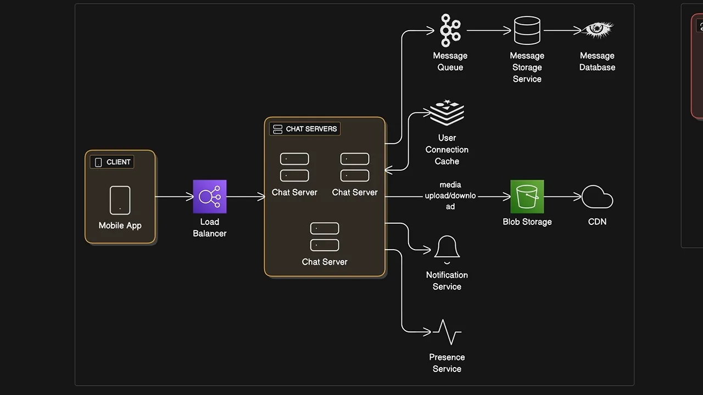
| 구성 요소 | 하는 일 | 예시 |
|---|---|---|
| 모바일 앱 | 채팅 서버와 연결 유지, UI(User Interface), 로컬 메시지 저장, 실패 시 재시도 | — |
| 채팅 서버 | WebSocket 유지, 사용자 사이 메시지 라우팅, 접속 추적 | — |
| 메시지 큐 | 쓰기와 전달 분리. 서버가 바로 확인 응답을 주고 비동기로 넣어요 | Kafka, RabbitMQ |
| 메시지 저장소 | 큐를 소비해 저장. 쓰기 처리량이 크고 조회 패턴이 단순해요 | Cassandra, DynamoDB |
| 연결 캐시 | 누가 온라인인지, 어느 채팅 서버에 붙었는지, 마지막 활동 시각. DB보다 훨씬 빨리 찾아요 | Redis |
| 미디어 | 파일은 블롭 스토리지, 인기 파일은 세계 곳곳의 CDN 엣지 | S3, Google Cloud Storage |
| 알림 서비스 | 오프라인 사용자에게 푸시 | Apple 푸시 알림 서비스, FCM(Firebase Cloud Messaging) |
| 프레즌스 서비스 | 하트비트를 받아 온라인 상태를 바꾸고, 관심 있는 사용자에게 알려요 | — |
폴링, 롱 폴링, WebSocket
앱과 채팅 서버가 어떻게 주고받을지 세 가지를 비교해요. 먼저 일반 폴링 그림이에요. 위쪽 빨간 'Polling' 상자에서 클라이언트가 "새 메시지 있어요?"를 반복해서 묻고, 첫 번째엔 'No new messages', 두 번째에야 메시지를 받아요.
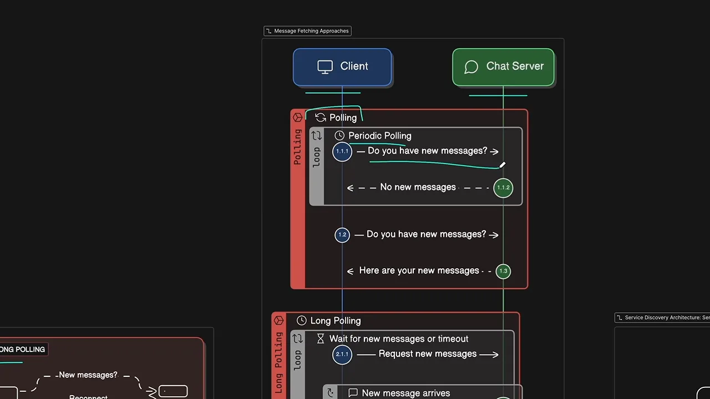
롱 폴링은 서버가 새 메시지가 오거나 타임아웃이 될 때까지 응답을 미뤄요. 낫긴 하지만 응답마다 연결을 닫고 새로 열어서 HTTP 핸드셰이크가 반복돼요. 기다리는 연결도 메모리와 스레드 풀 자리를 차지해요. WebSocket 그림은 초록 상자 하나로 끝나요. 위 세 줄이 처음 한 번의 연결 수립이고, 가운데 'Bi-directional Communication'이 그 연결로 양쪽이 언제든 보내는 부분이에요.
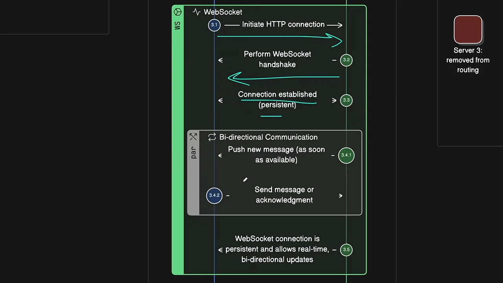
| 방식 | 동작 | 문제·대가 |
|---|---|---|
| 폴링 | 일정 간격으로 새 메시지가 있는지 물어요 | 빈 응답으로 대역폭 낭비, 간격만큼 지연 |
| 롱 폴링 | 서버가 메시지나 타임아웃까지 응답을 미뤄요 | 연결을 계속 열고 닫는 비용, 대기 연결이 메모리와 스레드를 차지 |
| WebSocket | 한 번 연결해 양방향으로 계속 주고받아요 | 연결당 메모리가 더 들고, 이를 지원하는 로드 밸런서가 필요해요. 강사는 L7 대신 L4 로드 밸런싱을 써야 한다고 말해요 |
강사의 결론은 WebSocket이에요. 메모리가 더 들어도 실시간 전달과 지연 요구사항을 생각하면 그만한 값어치가 있다는 거예요.
채팅 서버가 죽고 살아날 때: 서비스 디스커버리
운영 환경의 채팅 서버는 죽고, 재배포되고, 늘었다 줄었다 해요. 로드 밸런서는 지금 살아 있는 서버를 알아야 해요. 그림 가운데 'SERVICE DISCOVERY CLUSTER'가 Consul 노드 셋이고, 오른쪽 아래 빨간 'Chat Server 3 (Unhealthy)'가 빠진 서버예요.
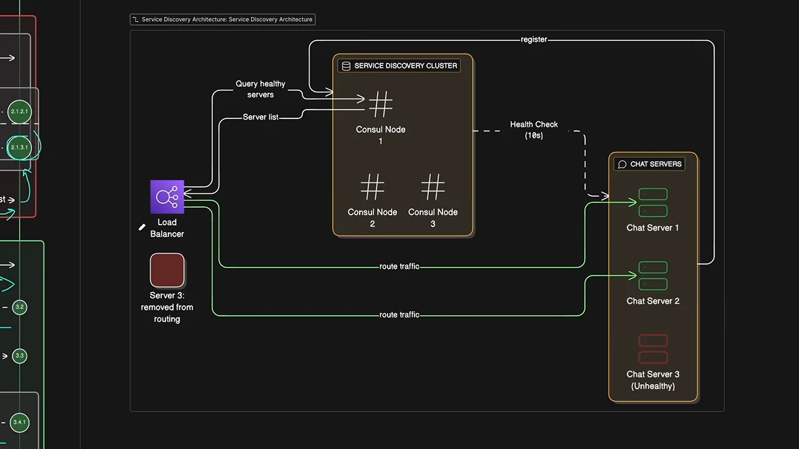
서버가 뜨면 자기 IP(Internet Protocol)로 Consul이나 AWS Cloud Map 같은 레지스트리에 등록해요. 레지스트리는 10초마다 헬스 체크를 하고, 로드 밸런서는 건강한 서버 목록을 받아 라우팅 표를 고쳐요. 이게 서비스 디스커버리예요.
데이터 모델
저장소를 성격에 따라 나눠요. 아래쪽 검은 띠에 관계가 정리돼 있어요.
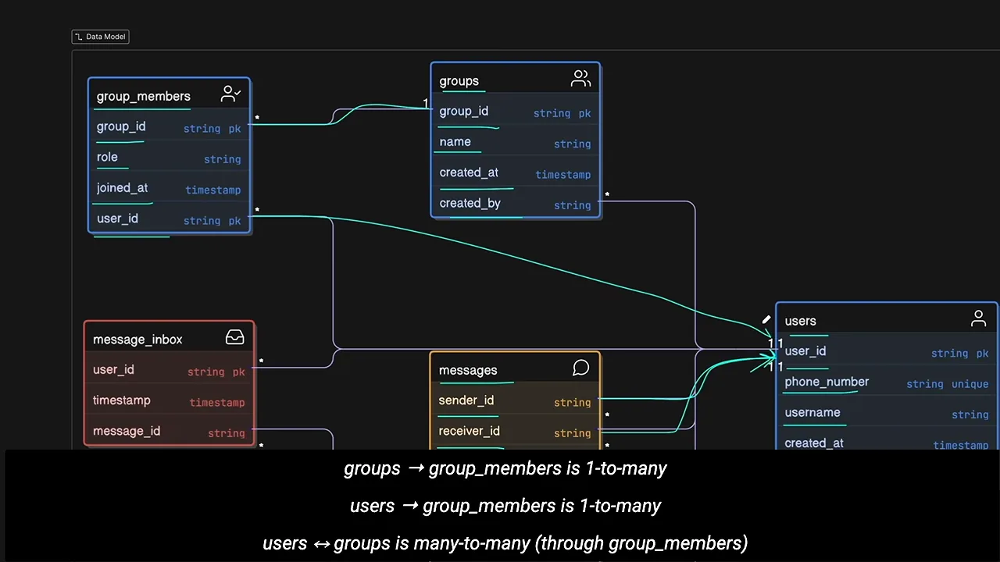
| 테이블 | 주요 필드 | 저장소 |
|---|---|---|
| users | user_id, phone_number(고유), username, created_at, last_seen | PostgreSQL 또는 MySQL |
| messages | message_id, sender_id, receiver_id, content, media_url, status(sent/delivered/read), timestamp, is_deleted | Cassandra(쓰기가 많아서) |
| groups, group_members | group_id, name, created_at, created_by / group_id, user_id, role, joined_at | PostgreSQL |
| 접속 레지스트리 | user_id, server_id, connection_id, last_active, device_type | Redis, 하트비트마다 갱신(약 300초) |
WebSocket과 REST 흐름
클라이언트와 서버 사이 첫 여덟 단계가 시퀀스 다이어그램에 번호로 붙어 있어요. 1·2가 인증, 3·4가 전송과 확인, 5~8이 받은 메시지 전달과 수신·읽음 확인이에요.
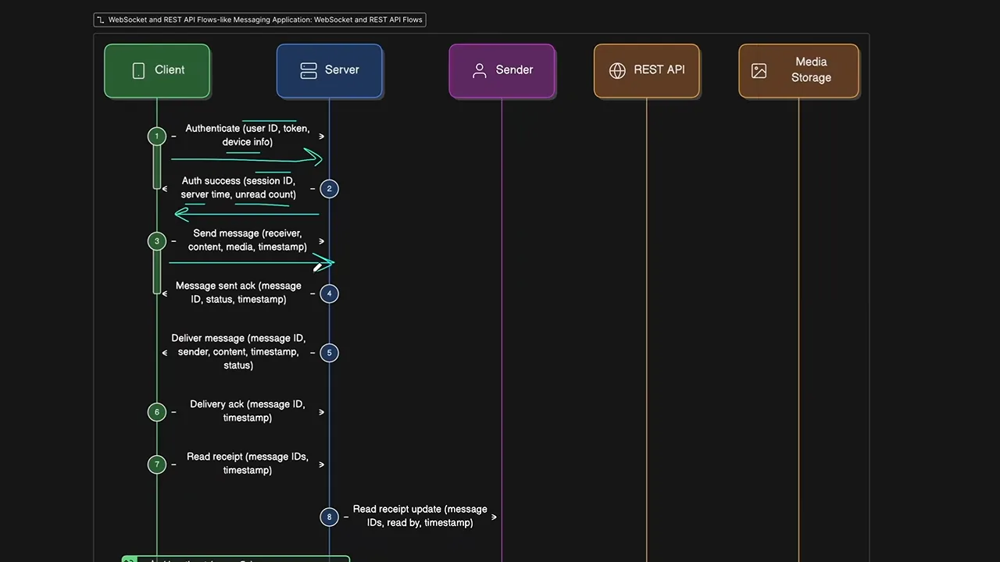
WebSocket 위에서는 인증, 메시지 전송, 확인 응답, 수신·읽음 확인, 그리고 5~10초 간격의 하트비트가 오가요. 앱을 닫거나 브라우저 탭을 닫으면 하트비트가 끊겨 연결을 정리해요. 미디어 업로드만 REST로 따로 해요. POST /api/media/upload로 파일 종류·크기·대화를 보내면, 서버가 업로드 URL, 미디어 ID, 만료 시각을 돌려주고, 앱이 그 사전 서명 URL로 저장소에 직접 올려요.
WhatsApp ②: 메시지가 오가는 길
여러 기기 동기화
사용자 A가 휴대폰·태블릿·데스크톱 세 대를, B가 휴대폰·노트북 두 대를 쓴다고 해 봐요. 다이어그램 위쪽 줄의 열 이름이 각 기기와 그 기기가 붙은 채팅 서버예요. A의 휴대폰이 서버 A로 보내면, A의 태블릿(서버 C)과 데스크톱(서버 D)에도 'Display sent message'가 가요.
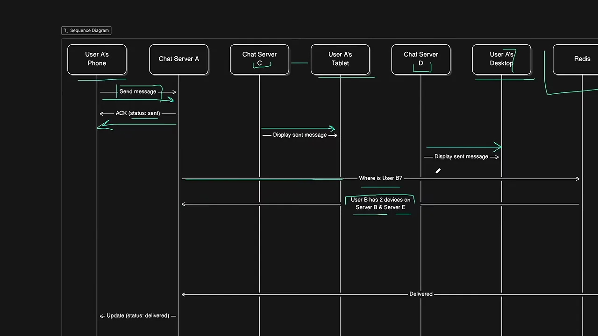
B 쪽도 같아요. 서버 B가 휴대폰에, 서버 E가 노트북에 전달해요. B가 휴대폰에서 받으면 '받음'이 서버 A를 거쳐 A의 모든 기기로, 읽으면 '읽음'이 같은 길로 가요. B의 노트북에도 읽음이 반영돼요. 기기끼리 충돌하면 버전 번호를 붙인 '마지막 쓰기 우선'으로 풀어요.
최적화도 필요해요. 새 기기에 전체 기록을 보내면 비싸니 증분 동기화를 해요. 최근 30일만 먼저 보내고, 사용자가 위로 스크롤할 때 더 오래된 걸 가져와요. 아주 오래된 건 콜드 스토리지에 두고 필요할 때 불러와요. 대가는 전달 작업량이 약 두 배가 된다는 점이에요. 그래도 사용자는 모든 기기에서 같은 대화를 기대하니 꼭 필요한 기능이에요.
둘 다 온라인일 때
열 여섯 개짜리 다이어그램을 위에서 아래로 따라가요. 서버 A가 메시지 ID를 만들고, 'ACK (status: sent)'를 돌려주고, Redis에 B의 위치를 물어 서버 B로 넘겨요. 서버 B가 실시간으로 전달하면 'Delivery ACK'가 거꾸로 돌아와요.
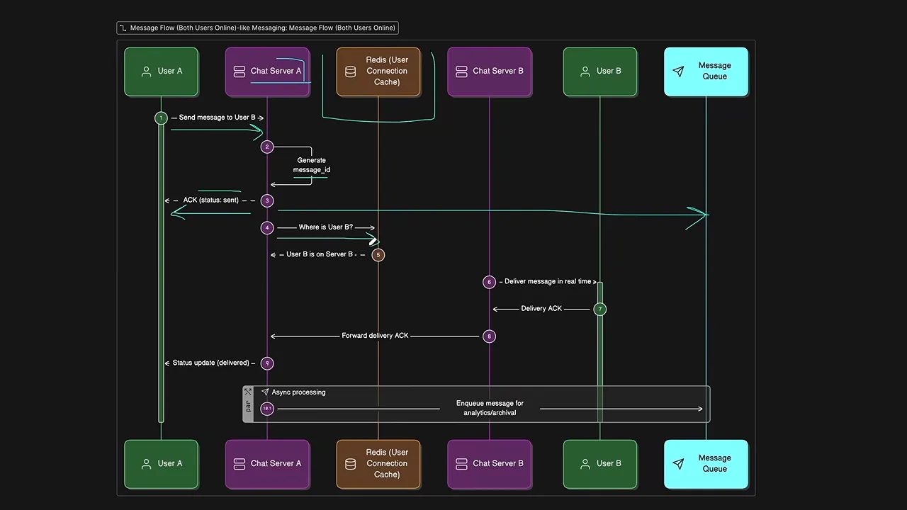
서버 A에서 서버 B로 넘기는 건 Redis Pub/Sub 모델로 해요. 그사이 메시지 큐는 Cassandra 같은 메시지 DB에 기록을 써요. B가 메시지를 열면 같은 길로 '읽음'이 돌아와요.
받는 사람이 오프라인일 때
앞부분은 같아요. 서버 A가 Redis에서 B의 상태를 확인했더니 오프라인이에요. 다이어그램의 'User B is offline' 구간이 그다음 할 일 네 가지예요.
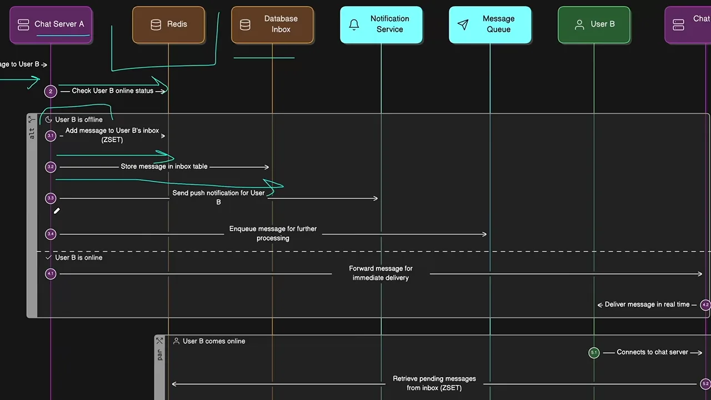
B의 Redis 받은편지함(정렬 집합)에 넣고, DB의 받은편지함 테이블에도 저장하고, 알림 서비스로 푸시를 보내요. 알림 서비스는 Apple이나 Google의 푸시 시스템을 불러요. 메시지는 큐에도 넣어 DB에 영구 저장해요. 나중에 B가 앱을 열어 서버 C에 접속하면, 서버 C가 받은편지함에서 쌓인 메시지를 꺼내 보내고 A에게 상태를 알려요.
그룹 메시지
50명 그룹을 예로 들어요. 1~5번이 준비 과정이에요. 서버 A가 그룹 서비스에 'group_789'의 구성원을 묻고, 50명의 ID를 받고, Redis에서 상태를 확인해 30명 온라인, 20명 오프라인이라는 답을 받아요.
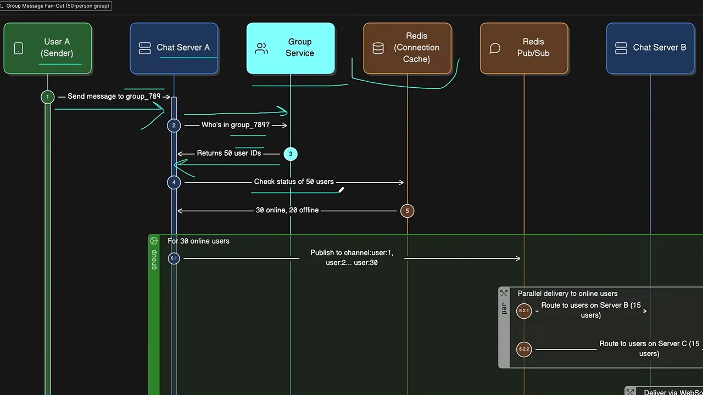
각 기기의 확인 응답은 원래 서버 A로 모여서 A의 화면 상태를 바꿔요. 오프라인 20명은 1:1과 같은 방식이에요. Redis 받은편지함 20곳, DB 받은편지함 20줄에 쓰고, 푸시를 보내요. 메시지 본문은 큐를 거쳐 DB에 한 번만 저장해요. 마지막으로 A의 기기에는 '30명 받음, 20명 대기'가 표시돼요.
미디어는 채팅 서버를 거치지 않아요
잘못된 방법부터 짚어요. 클라이언트가 이미지를 채팅 서버에 올리고, 서버가 DB에 저장하고, 받는 사람이 서버에서 내려받는 방식이에요. 그러면 채팅 서버가 파일 전송 대역폭에 묶여서, 잘하는 일(작은 메시지를 빨리 라우팅하기) 대신 못하는 일(큰 덩어리 옮기기)을 하게 돼요.
올바른 업로드 흐름이에요. 2~4번에서 서버 A가 블롭 스토리지에 사전 서명 업로드 URL을 받아 앱에 넘기고, 초록 'Direct Upload' 구간에서 앱이 S3로 바로 올려요. 7번에서 미디어 URL만 담은 채팅 메시지를 보내요.
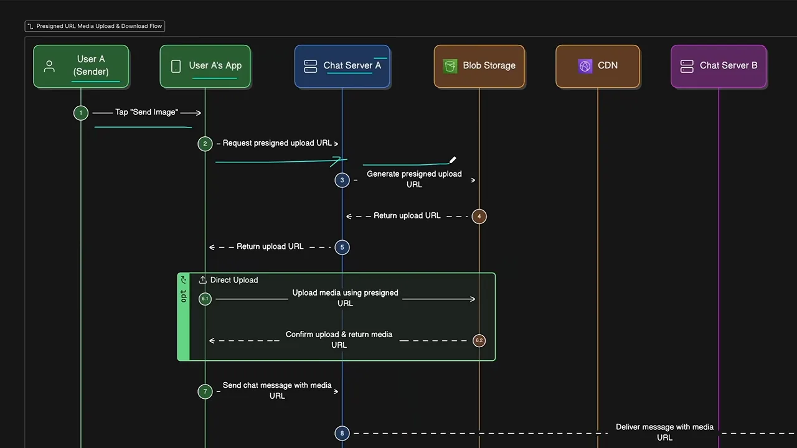
받는 쪽도 같아요. B가 미디어를 누르면 서버 B가 사전 서명 다운로드 URL을 만들어 줘요. 그다음 두 길이 있어요. 아래 주황 상자의 위쪽 'Via CDN'과 아래쪽 'Direct from Storage'예요.
강사는 CDN을 권해요. 이게 없으면 연결 10만 개를 받는 채팅 서버 하나가 몇 MB짜리 파일을 동시에 올리는 사용자 100명에 짓눌릴 수 있다고 해요. 사전 서명 URL은 짧은 TTL로 만료되고, 미디어 자체의 TTL은 메시지 보관 기간인 30일과 맞춰서 자동으로 지워져요.
WhatsApp ③: 배치 쓰기, 종단간 암호화, 속도 제한
저장 서비스를 파티션으로 나눠 늘리기
수천 명을 넘어 더 키우려면 서버를 더 떼어 놔야 해요. 흔한 방법이 Kafka 같은 메시지 큐예요. 그림 왼쪽 메시지 큐에서 나온 세 갈래가 저장 서비스 인스턴스 셋으로 가요. 화살표마다 'assigned partitions (0-9)', '(10-19)', '(20-29)'가 붙어 있어요.
각 인스턴스의 Kafka 소비자가 메시지를 받아 DB 클러스터에 묶어서 써요. 실패하면 인스턴스 안의 재시도 로직이 잠시 뒤 다시 써요. 그래도 실패하면 큐에서 메시지를 지우지 않거나, 데드 레터 큐로 옮겨 나중에 따로 처리해요. 쓰기가 성공하면 인덱스 갱신기가 검색용 인덱스를 고쳐요.
처리 흐름과 배치 쓰기
한 인스턴스 안을 확대한 그림이에요. 왼쪽 위에서 검증된 메시지가 'Batch Buffer'로 들어가고, 1,000건이나 5초가 차면 'Batch Writer'로 흘러가요. 오른쪽으로 세 갈래가 나가요. 위가 DB 일괄 삽입, 가운데가 검색·분석 인덱스 갱신, 아래가 처리 완료 표시와 오프셋 커밋이에요.
그 앞 단계는 이래요. 소비자가 100ms마다 500건씩 꺼내고, 20개 스레드로 병렬 처리해요. 메시지마다 스키마와 크기를 확인하고(첨부가 한도를 넘으면 오류 응답), 중복 제거용 해시를 계산하고, @멘션과 미리보기용 링크를 뽑고, 조회용 인덱스 값을 만들어요. 배치 버퍼는 대상 샤드별로 정렬하고 대화별로 묶어서 삽입문을 준비해요.
1,000건 중 10건이 실패하면, 간단한 재시도를 먼저 해 봐요. 속도 제한에 걸린 것처럼 단순한 이유일 수 있거든요. 그래도 안 되면 데드 레터 큐로 보내고, 거기서 여러 단계 재시도를 더 한 뒤에야 사용자에게 전송 실패를 알려요.
배치의 효과를 강사는 숫자로 보여 줘요. 한 건 삽입에 5ms라면 1,000건을 하나씩 넣으면 5초, 한 번에 묶으면 50ms예요. 같은 축으로 그리면 이 정도 차이예요.
Cassandra에 쓰는 코드 예시예요. BEGIN BATCH와 END BATCH 사이에 INSERT가 이어지고, 주석이 중요해요. 같은 메시지를 두 참여자의 샤드에 모두 쓴다고 적혀 있어요.
INSERT의 메시지 ID가 같고 보낸 사람과 받는 사람만 바뀌었어요. 마지막 섹션의 '대화 상대 샤드에도 복사' 전략이 여기서 미리 나와요. 영상 2:41:05에서 보기종단간 암호화
WhatsApp에서는 메시지가 보내는 기기에서 암호화되고 받는 기기에서만 풀려요. 사이의 채팅 서버 A와 B도 내용을 못 읽어요. 강사는 Signal 프로토콜로 이걸 설명해요. 다이어그램은 열 셋이에요. 왼쪽 사용자 A, 가운데 초록 키 서버, 오른쪽 사용자 B예요. 강사가 왼쪽에 'Pr'(개인 키), 가운데에 'Pu'(공개 키)라고 적었어요.
- 가입 때 신원 키 쌍을 만들어요 — 공개 키는 키 서버에 올리고, 개인 키는 기기에만 둬요.
- B는 프리키를 미리 올려 둬요 — 서명된 프리키 100개 정도를 올려 두면, 서버가 앞으로 대화를 시작할 사람을 위해 보관해요.
- A가 B의 키를 가져와요 — B의 신원 키와 프리키 하나를 받아요.
- A가 세션을 만들고 보내요 — 두 사람만 아는 키를 맞추고, 암호문과 A의 임시 공개 키를 함께 보내요. B가 받은 메시지를 풀면 보안 세션이 성립해요
강사는 여기에 메시지 카운터를 더하면, 세션 키가 털려도 메시지 하나하나를 풀기가 매우 어려워진다고 덧붙여요. 말로는 "A의 공개 키로 암호화하고 A의 공개 키로 푼다"고 설명하는데, 화면의 시퀀스는 암호문에 'A의 임시 공개 키'를 붙여 보내는 것으로 그려져 있어요. 아래 보충 설명에서 실제 프로토콜을 짚었어요.
속도 제한과 남용 방지
속도 제한이 없으면 공격자가 데이터를 긁어 가거나 DDoS를 걸 수 있어요. 그림 왼쪽 'User Action'에서 행동 종류에 따라 갈라져요. 위쪽 파란 'PER-USER LIMITS' 상자가 메시지·그룹 생성·미디어 업로드이고, 아래가 연결 시도와 그룹 초대예요. 오른쪽 상자마다 따로 쓰는 카운터가 붙어 있어요.
| 행동 | 카운터 | 영상의 예시 한도 |
|---|---|---|
| 메시지 전송 | 메시지 토큰 버킷 | 분당 100건 |
| 그룹 생성 | 그룹 생성 카운터 | 시간당 5개 이상이면 과해요 |
| 미디어 업로드 | 미디어 할당량 | 분당 10~100개 |
| 연결 시도 | IP 연결 카운터 | 1분 안에 서로 다른 IP 5곳에서 접속 시도 |
| 그룹 초대 | 그룹 초대 카운터 | — |
숫자는 예시일 뿐이고, 요구사항 단계에서 정할 값이에요. 한도를 넘었을 때의 대응은 점점 강해져요. 그림의 오른쪽 세로 줄이 단계예요.
처음엔 "1분에 요청이 너무 많아요, 60초 뒤 다시 시도하세요" 같은 경고나 CAPTCHA(Completely Automated Public Turing test to tell Computers and Humans Apart)를 보여요. 반복하면 1시간, 그다음 24시간 제한, 마지막엔 계정을 정지하고 사람이 검토해요. 봇이나 해커인지, 규칙을 몰랐던 사용자인지 확인하고 연락해요. 다시 열어도 같은 한도가 걸리고, 의심 계정 표시가 붙어 한 번 더 걸리면 영구 삭제될 수 있어요.
토큰 버킷 코드는 이렇게 생겼어요. 생성자에서 용량과 채움 속도를 받고, 요청마다 refill()로 흐른 시간만큼 토큰을 채운 뒤, 토큰이 1개 이상이면 하나 빼고 통과시켜요.
min(capacity, …) 덕분에 오래 쉬어도 토큰이 용량 이상으로 쌓이지 않아요. 순간적으로 몰려도 용량만큼만 통과해요. 영상 2:49:05에서 보기그림 아래쪽 'All Servers Use Central Store'가 마지막 조건이에요. 사용자마다 다른 채팅 서버에 붙어 있으니, 카운터를 서버마다 따로 두면 서버를 옮겨 다니며 우회할 수 있어요. 그래서 Redis 같은 중앙 저장소를 모두가 쓰고, 원자적 연산으로 정확도를 지켜요. 24시간 정도만 들고 있는 값이라 DB보다 Redis가 맞아요.
WhatsApp ④: 샤딩, 정리 작업, 장애, 기능 출시
샤딩 기준 고르기
서버를 늘리고 속도 제한을 걸어도, DB 하나로는 이 트래픽을 못 받아요. 메시지 DB를 여러 인스턴스로 나눠야 하고, 핵심 결정은 무엇으로 나눌지예요.
| 기준 | 좋은 점 | 문제 |
|---|---|---|
| 사용자 ID | 한 사용자의 메시지가 한 샤드에 모여 한 곳에서 읽어요 | 많이 쓰는 사용자가 핫스팟이 돼서 샤드 크기가 불균형해져요 |
| 메시지 ID | 데이터가 고르게 퍼져요 | 한 사람 메시지를 읽으려면 모든 샤드를 뒤지고 합쳐야 해서 느리고 비싸요 |
| 사용자 ID + 상대 샤드에 복사 | 각자 자기 샤드만 읽으면 돼서 읽기가 아주 빨라요 | 메시지마다 두 번 써서 쓰기량이 두 배예요 |
강사는 하나만 고르는 것보다 여러 방법과 그 트레이드오프를 말하는 게 면접의 핵심이라고 해요. 그러고 나서 세 번째 방법을 권해요. 그림 가운데 'PRIMARY SHARDS (WRITES ONLY)' 상자 안 글씨가 그 내용이에요.
각 샤드는 다시 복제본을 둬요. 사용자는 복제본에서 기록을 읽고, 쓰기를 받는 주 샤드는 건드리지 않아요. 여기서 강사가 정리하는 원칙이 있어요. 샤딩은 쓰기 확장, 복제는 읽기 확장이에요. 어느 쪽이 더 중요한지는 요구사항 단계에서 물었어야 하고, 놓쳤다면 지금이라도 추측하지 말고 물어요. 답에 따라 복제, 메시지 ID 샤딩, 타임스탬프 샤딩 중에서 고를 수 있어요.
샤드 하나를 확대하면 이래요. 사용자 ID 1~1,000이 샤드 1의 주 노드로 가고, 주 노드는 복제본 2~3개로 비동기 복제해요. 읽기 쿼리는 오른쪽 'REPLICA NODES (READS ONLY)'로만 가요.
쓰레기 데이터 정리
이 규모에서는 다시 안 읽힐 데이터가 계속 쌓여요. 만료된 미디어, 오래된 미전달 메시지, 끊긴 연결 같은 것들이에요. 그림 왼쪽 위 'Job Scheduler (Airflow / Cron)'가 작업을 만들고, 가운데 'Job Queue'가 쌓아 두고, 왼쪽 아래 'Worker Pool'이 꺼내서 가운데 초록 'CLEANUP JOBS'를 실행해요.
워커는 작업을 받으면 확인 응답을 주고, 실패하면 큐에 되돌려요. 결과는 모니터링으로 보내서 시간이 지나며 얼마나 잘 도는지 보고 고쳐요. 한 번 만들고 잊는 장치가 아니에요. 트레이드오프도 분명해요. 모니터링하고 디버깅할 대상이 하나 더 생겨요. 하지만 하지 않으면 쓰레기가 쌓여 결국 더 큰 비용으로 해야 해요.
장애 1: Redis가 죽으면
지금까지는 모두가 행복한 정상 흐름이었어요. 실제로는 어디서든 장애가 나요. 먼저 캐시 장애예요. 미전달 메시지 받은편지함이 Redis에 있는데 Redis 클러스터가 죽으면 어떻게 될까요? 그림의 번호가 답이에요. (1)에서 빠른 Redis 받은편지함에 쓰고, (2)에서 오래가는 DB 받은편지함에도 백업으로 써요.
읽을 때는 Redis를 먼저 시도하고, 비었거나 응답이 없으면 DB에서 읽어요. 실패한 사실은 로그로 남겨 나중에 CloudWatch 같은 곳에서 추적해요. 느리지만 전체가 실패하는 것보다 나아요. Redis가 돌아오면 백그라운드 작업이 DB 받은편지함에서 아직 전달되지 않은 행을 골라 Redis에 다시 채우고, DB 기록은 그대로 둬요. 그 뒤로는 다시 Redis 중심으로 돌아가요. 이 그림의 Redis 받은편지함에는 7일 TTL이 적혀 있어요. 요구사항의 30일 보관은 DB 쪽이 맡는 셈이에요.
여러 지역으로 펼치기
사용자는 전 세계에 있어요. 지역마다 채팅 서버, Redis 클러스터, DB 샤드까지 모두 갖춘 풀스택을 둬서 따로 돌 수 있게 해요. 그림 가운데 'GeoDNS'가 사용자를 가까운 지역으로 보내요. 위 상자가 유럽(아일랜드), 아래 상자가 아시아·태평양(싱가포르)이에요.
지역마다 사용자 수가 다르니 채팅 서버 수도 달라요. 사용자가 많은 아일랜드에는 많이, 적은 곳에는 적게 둬요.
장애 2: Kafka 클러스터가 통째로 죽으면
Kafka 클러스터에는 브로커라고 부르는 서버가 여럿 있어요. 토픽은 파티션으로 나뉘고, 파티션마다 리더와 복제본이 있어요. 생산자는 리더에 쓰고, 복제본은 이중화를 맡아요. 브로커 하나가 죽으면 새 브로커를 넣고, Kafka가 시간을 두고 파티션을 다시 나눠요.
클러스터 전체가 죽는 건 드물지만 가능해요. 그러면 채팅 서버가 메시지를 발행하지 못하고, 저장 서비스도 소비하지 못해 데이터가 사라질 수 있어요. 그림이 복구 순서예요. 왼쪽 위 빨간 'Old Kafka Cluster (destroyed)'가 죽으면 새 클러스터를 띄우고, 저장 서비스가 DB에서 마지막으로 처리한 메시지 ID를 찾아요. 채팅 서버에 그 이후 메시지를 요청해 새 Kafka에 다시 발행하고, 정상 소비로 돌아가요.
그래서 채팅 서버에 로컬 버퍼를 둬요. 발행이 실패하면 오류를 로그에 남기고 메모리 버퍼에 쌓아요. 버퍼는 10만 건까지이고, 넘치면 전체를 실패시키지 않고 가장 오래된 것부터 버려요. 일정 간격으로 Kafka가 돌아왔는지 보고 다시 발행해요. 이 간격은 새 클러스터를 띄우는 시간보다 길게 잡아요. 영상은 2초(2,000ms)를 예로 들어요. 채팅 서버까지 함께 죽을 때를 대비해 로컬 디스크에 추가 전용 로그 파일도 남겨요. 서버가 살아나면 이 파일을 다시 읽어 발행하고, 성공하면 지워요.
기능은 조금씩 켜요: 피처 플래그
큰 시스템은 새 기능을 모든 사용자에게 한 번에 내보내지 않아요. 그림 왼쪽 채팅 서버가 오른쪽 위 'Feature Flags Store'에 지원 기능을 묻고, 사용자·그룹별로 점진적으로 켜진 기능 목록을 받아요. 아래 두 줄이 받은 결과의 쓰임이에요. 새 앱(v2.24.5)에는 새 기능을 담아 보내고, 구버전(v2.20)에는 지원하지 않는 필드를 빼고 보내요.
피처 플래그 저장소는 클라우드마다 있고, 강사가 전 직장에서 쓴 LaunchDarkly 같은 외부 도구도 있어요. '새 테마 켜짐' 같은 키-값을 환경별로 다르게 둬요. 스테이징에서는 켜서 개발자가 확인하고, 운영에서는 끄거나 20% 사용자에게만 켜요. 오류 로그가 없으면 모두에게 열어요.
마지막으로: 어떻게 접근할까요
강사는 전체를 접근법으로 정리해요.
- 요구사항을 정하고 숫자부터 계산해요. 그래야 저장소와 Kafka가 필요한지 판단할 수 있어요.
- Redis Pub/Sub나 샤딩으로 바로 뛰지 말고, 수천 명용 단순한 구조에서 시작해 면접관과 대화하며 키워요.
- 병목을 찾아요. 이 사례에서는 Kafka, 속도 제한, DB 장애였어요.
- 결정마다 비용을 말해요. WebSocket은 메모리를 더 쓰지만 메신저에서는 그만한 값어치가 있고, 다른 시스템이라면 폴링이 나을 수도 있어요.
- 설계가 안정된 뒤에 장애를 다뤄요. 주요 구성 요소도 정하기 전에 장애부터 파고들지 않아요.
외워서 되는 게 아니라, 단계를 알고 시스템마다 흐름을 따라가며 트레이드오프를 말하는 거예요. 한두 시간에 완벽한 시스템을 기대하는 면접은 없어요. 면접관은 어떻게 생각하는지, 그냥 좋아서 고르는 건 아닌지를 봐요. 그래서 설계하면서 생각을 소리 내어 말하라고 해요. 잘못된 길로 가면 면접관이 힌트를 줘서 방향을 잡아 줄 수 있거든요.